9. Evaluación de modelos#
Introducción
Después de discutir los fundamentos del aprendizaje supervisado y sus algoritmos, abordaremos la evaluación de modelos y la selección de parámetros. Nos enfocaremos en modelos supervisados, específicamente en regresión y clasificación, ya que la evaluación en aprendizaje no supervisado es más cualitativa.
Para evaluar modelos supervisados, dividimos el conjunto de datos en entrenamiento y prueba usando
train_test_split, construimos un modelo confit, y lo evaluamos en el conjunto de prueba conscore, que calcula la fracción de muestras correctamente clasificadas.
import warnings
warnings.filterwarnings('ignore')
from sklearn.datasets import make_blobs
from sklearn.linear_model import LogisticRegression
from sklearn.model_selection import train_test_split
Creamos un conjunto de datos sintético
X, y = make_blobs(random_state=0)
Dividimos los datos y las etiquetas en un conjunto de entrenamiento y otro de prueba
X_train, X_test, y_train, y_test = train_test_split(X, y, random_state=0)
Instanciar el modelo y ajustarlo al conjunto de entrenamiento
logreg = LogisticRegression().fit(X_train, y_train)
Evaluar el modelo en el conjunto de prueba
print("Test set score: {:.2f}".format(logreg.score(X_test, y_test)))
Test set score: 0.88
Evaluar el modelo en el conjunto de entrenamiento
print("Train set score: {:.2f}".format(logreg.score(X_train, y_train)))
Train set score: 0.91
Observación
Recuerde que la razón por la que dividimos nuestros datos en conjuntos de entrenamiento y de prueba, es que estamos interesados en medir lo bien que nuestro modelo se generaliza a nuevos datos (no vistos anteriormente).
No nos interesa lo bien que nuestro modelo se ajusta al conjunto de entrenamiento, sino lo bien que puede hacer predicciones sobre datos no observados durante el entrenamiento.
En esta sección, ampliaremos dos aspectos de esta evaluación. En primer lugar, introduciremos la validación cruzada (
cross-validation), una forma más sólida de evaluar el rendimiento de la generalización, y discutiremos los métodos para evaluar el rendimiento de la clasificación y la regresión que van más allá de las medidas por defectoaccuracyy \(R^2\) proporcionadas por el métodoscore.También hablaremos del
GridSearchCV, un método eficaz para ajustar los parámetros de los modelos supervisados y obtener el mejor rendimiento de la generalización.
9.1. Cross-Validation#
Introducción
La validación cruzada (
cross-validation) es un método estadístico para evaluar el rendimiento de la generalización que es más estable y exhaustivo que el uso de una división en un conjunto de entrenamiento y otro de prueba.En la validación cruzada, los datos se dividen repetidamente y se entrenan múltiples modelos. La versión más utilizada de la validación cruzada es
k-fold cross-validation, dondekes un número especificado por el usuario, normalmente 5 o 10.
Cuando se realiza la validación cruzada
five-fold, los datos se dividen primero en cinco partes de tamaño (aproximadamente) igual, llamadas pliegues (folds). A continuación, se entrena una secuencia de modelos. El primer modelo se entrena utilizando el primer pliegue como conjunto de prueba, y los pliegues restantes (2-5) se utilizan como conjunto de entrenamiento. El modelo se construye utilizando los datos de los pliegues 2-5, y luego se evalúa accuracy en el pliegue 1.A continuación, luego se construye otro modelo, esta vez utilizando el pliegue 2 como conjunto de prueba y los datos de los pliegues 1, 3, 4 y 5 como conjunto de entrenamiento. Este proceso se repite utilizando los pliegues 3, 4 y 5 como conjuntos de prueba. Para cada una de estas cinco divisiones de los datos en conjuntos de entrenamiento y de prueba, calculamos
accuracy. Al final, hemos recogido cinco valores deaccuracy.
import mglearn
mglearn.plots.plot_cross_validation()
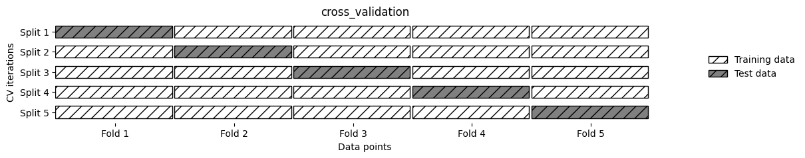
Normalmente, la primera quinta parte de los datos es conocida como el primer fold, la segunda quinta parte de los datos es el segundo fold, y así sucesivamente.
9.1.1. Validación cruzada en scikit-learn#
La validación cruzada se implementa en
scikit-learnutilizando la funcióncross_val_scoredel módulomodel_selection. Los parámetros de la funcióncross_val_scoreson, el modelo que queremos evaluar, los datos de entrenamiento y las etiquetas reales. Vamos a evaluarLogisticRegressionen el conjunto de datosiris.Utilizaremos los parámetros por defecto de este modelo, más adelante estudiaremos como conseguir los más óptimos por medio de
grid-search, por ahora solo estamos interesados en evaluar el modelo por defecto usandocross_val_score. Para más información acerca de los argumentos del modelo (ver sklearn.linear_model.LogisticRegression).
Iris dataset
Objetivo Principal: Predecir la especie de una flor
irisbasándose en medidas de sus características morfológicas. El dataset contiene tres especies deiris:setosa,versicoloryvirginica, y las características medidas son el largo y el ancho del sépalo y el pétalo.Uso: Este problema de clasificación permite evaluar la capacidad de un modelo para diferenciar entre las especies basándose en características continuas.
{kind=link}
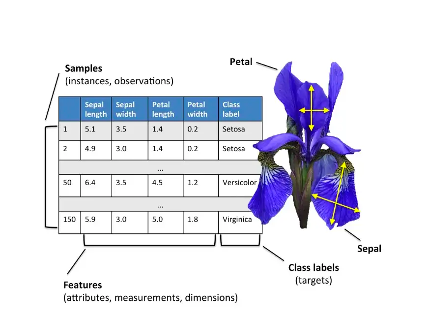
from sklearn.model_selection import cross_val_score
from sklearn.datasets import load_iris
from sklearn.linear_model import LogisticRegression
import numpy as np
iris = load_iris()
iris.data.shape
(150, 4)
iris.target.shape
(150,)
for i, feature in enumerate(iris.feature_names):
data = iris.data[:, i]
print(f"{feature}:")
print(f" Mean: {np.mean(data)}")
print(f" Std: {np.std(data)}")
print(f" Min: {np.min(data)}")
print(f" Max: {np.max(data)}")
print(f" 25th percentile (Q1): {np.percentile(data, 25)}")
print(f" Median (Q2): {np.median(data)}")
print(f" 75th percentile (Q3): {np.percentile(data, 75)}")
print()
sepal length (cm):
Mean: 5.843333333333334
Std: 0.8253012917851409
Min: 4.3
Max: 7.9
25th percentile (Q1): 5.1
Median (Q2): 5.8
75th percentile (Q3): 6.4
sepal width (cm):
Mean: 3.0573333333333337
Std: 0.4344109677354946
Min: 2.0
Max: 4.4
25th percentile (Q1): 2.8
Median (Q2): 3.0
75th percentile (Q3): 3.3
petal length (cm):
Mean: 3.7580000000000005
Std: 1.759404065775303
Min: 1.0
Max: 6.9
25th percentile (Q1): 1.6
Median (Q2): 4.35
75th percentile (Q3): 5.1
petal width (cm):
Mean: 1.1993333333333336
Std: 0.7596926279021594
Min: 0.1
Max: 2.5
25th percentile (Q1): 0.3
Median (Q2): 1.3
75th percentile (Q3): 1.8
print("Target (species):")
unique, counts = np.unique(iris.target, return_counts=True)
for i, count in zip(unique, counts):
print(f" {iris.target_names[i]}: {count} samples")
Target (species):
setosa: 50 samples
versicolor: 50 samples
virginica: 50 samples
Queda como ejercicio para el estudiante, realizar un EDA exahustivo para el dataset, teniendo en cuenta cada una de las variables y sus categorías. Evaluemos el uso de la función
cross_val_score
logreg = LogisticRegression()
scores = cross_val_score(logreg, iris.data, iris.target);
print("Cross-validation scores: {}".format(scores))
Cross-validation scores: [0.96666667 1. 0.93333333 0.96666667 1. ]
Por defecto,
cross_val_scorerealiza unafive-fold cross validation, devolviendo cinco valores deaccuracy. Podemos cambiar el número de pliegues (folds) utilizados, cambiando el parámetrocv:
scores = cross_val_score(logreg, iris.data, iris.target, cv=10);
print("Cross-validation scores: {}".format(scores))
Cross-validation scores: [1. 0.93333333 1. 1. 0.93333333 0.93333333
0.93333333 1. 1. 1. ]
Una forma habitual de resumir la precisión de la validación cruzada es calcular la media
print("Average cross-validation score: {:.2f}".format(scores.mean()))
Average cross-validation score: 0.97
Utilizando la validación cruzada media podemos concluir que, esperamos que el modelo sea de precisión en torno al 97% de media. Si observamos las cinco puntuaciones producidas por la validación cruzada de cinco pliegues five-fold cross validation, también podemos concluir que hay una varianza relativamente alta en la precisión entre pliegues, que va del 100% de precisión al 93.33% de precisión aproximadamente.
Esto podría implicar que
el modelo es muy dependiente de los pliegues particulares utilizados para el entrenamiento, pero también podría ser simplemente una consecuencia del pequeño tamaño del conjunto de datos. Normalmente, si los resultados deaccuracyvarían considerablemente durante la validación cruzada de 5 pliegues, esto puede indicar problemas en el modelo, en los datos, o en el proceso de validación.
Varianza alta de accuracy entre pliegues
Varianza en los datos: Si los datos no están bien distribuidos o existen diferencias significativas entre los pliegues, los resultados de accuracy pueden variar mucho entre cada uno. Esto sucede comúnmente cuando los datos presentan sesgos o cuando ciertos pliegues contienen muestras que son más difíciles de clasificar.
Modelo inestable o de alta varianza: Algunos modelos, especialmente los que son complejos o sensibles a los datos de entrenamiento (como los árboles de decisión sin poda o redes neuronales profundas con pocos datos), pueden tener un rendimiento inconsistente en diferentes subconjuntos de los datos. En estos casos, el modelo se ajusta demasiado a los pliegues específicos, produciendo fluctuaciones en el
accuracy.Tamaño de la muestra: Si el conjunto de datos es pequeño, la variabilidad en los pliegues puede ser mayor, ya que cada subconjunto de datos tiene un peso proporcionalmente alto. En estos casos, la validación cruzada puede reflejar variaciones amplificadas.
Datos atípicos: La presencia de datos atípicos (outliers) en algunos de los pliegues puede afectar el
accuracyy producir resultados más dispares. Es importante revisar si los pliegues contienen estos datos y considerar métodos para manejarlos.
9.1.2. Ventajas de la validación cruzada#
Observación
Son varios los beneficios de utilizar la validación cruzada en lugar de una única división en un conjunto de entrenamiento y otro de prueba. En primer lugar, recuerde que
train_test_splitrealiza una división aleatoria de los datos. Imaginemos que tenemos “suerte” al dividir aleatoriamente los datos, y todos los ejemplos que son difíciles de clasificar acaban en el conjunto de entrenamiento.En ese caso, el conjunto de prueba sólo contendrá ejemplos “fáciles”, y nuestra precisión en el conjunto de prueba será irrealmente alto. Por el contrario, si tenemos “mala suerte”, es posible que pongamos al azar todos los ejemplos difíciles de clasificar en el conjunto de prueba y en consecuencia, obtener una score irrealmente bajo.
La validación cruzada garantiza que cada ejemplo esté en el conjunto de prueba una vez, obligando al modelo a generalizar bien en todo el conjunto. Proporciona un rango de precisión que muestra el rendimiento en el mejor y peor caso. A diferencia de dividir una sola vez, la validación cruzada usa más datos para entrenamiento (por ejemplo, 80% en cinco pliegues o 90% en diez pliegues), lo que mejora la precisión. Sin embargo, su desventaja es el mayor coste computacional, ya que se entrenan varios modelos en lugar de uno solo.
Observación
Es importante tener en cuenta que la validación cruzada no es una forma de construir un modelo que pueda aplicarse a nuevos datos. La validación cruzada no devuelve un modelo.
Cuando se llama a
cross_validation_score, se construyen internamente múltiples modelos, pero el propósito de la validación cruzada es evaluar lo bien que un algoritmo determinado generalizará cuando es entrenado en un conjunto de datos específico.
9.1.3. Validación cruzada KFold#
Dividir el conjunto de datos en
kpliegues comenzando por la primera parte de los datos, como descrito en la sección anterior, puede no ser siempre una buena idea. Por ejemplo, veamos el conjunto de datosiris
from sklearn.datasets import load_iris
iris = load_iris()
print("Iris labels:\n{}".format(iris.target))
Iris labels:
[0 0 0 0 0 0 0 0 0 0 0 0 0 0 0 0 0 0 0 0 0 0 0 0 0 0 0 0 0 0 0 0 0 0 0 0 0
0 0 0 0 0 0 0 0 0 0 0 0 0 1 1 1 1 1 1 1 1 1 1 1 1 1 1 1 1 1 1 1 1 1 1 1 1
1 1 1 1 1 1 1 1 1 1 1 1 1 1 1 1 1 1 1 1 1 1 1 1 1 1 2 2 2 2 2 2 2 2 2 2 2
2 2 2 2 2 2 2 2 2 2 2 2 2 2 2 2 2 2 2 2 2 2 2 2 2 2 2 2 2 2 2 2 2 2 2 2 2
2 2]
Podemos ajustar el número de pliegues en
cross_val_scorecon el parámetrocv. No obstante,scikit-learnpermite mayor control al aceptar un divisor de validación cruzada como parámetrocv. Aunque los valores predeterminados suelen ser adecuados, en ciertos casos puede ser útil una estrategia diferente.Por ejemplo, para replicar resultados con validación cruzada
k-folden clasificación, se puede importar la claseKFolddemodel_selectione instanciarla con el número deseado de pliegues.
from sklearn.model_selection import KFold
kfold = KFold(n_splits=3)
Entonces, podemos pasar el objeto
kfold splittercomo el parámetrocvacross_val_score:
print("Cross-validation scores:\n{}".format(cross_val_score(logreg, iris.data, iris.target, cv=kfold)))
Cross-validation scores:
[0. 0. 0.]
9.1.4. Validación cruzada estratificada StratifiedKFold#
En este conjunto de datos, el primer tercio corresponde a la clase 0, el segundo a la clase 1 y el último a la clase 2. Al realizar una validación cruzada de 3 pliegues, cada pliegue contendría solo una clase en el conjunto de prueba y las otras dos en el conjunto de entrenamiento. Esto causaría que la precisión fuera del 0%, ya que las clases en entrenamiento y prueba no coincidirían en ninguna división, lo cual es ineficaz para evaluar el modelo.
Como la estrategia simple de
k-foldfalla aquí,scikit-learnno la utiliza para clasificación, sino que utiliza lavalidación cruzada estratificada k-fold. En la validación cruzada estratificada, dividimos los datos de forma que las proporciones entre las clases sean las mismas en cada pliegue como en todo el conjunto de datos.
mglearn.plots.plot_stratified_cross_validation()
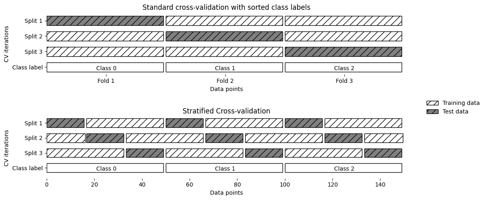
La validación cruzada estratificada de
kplieguesdistribuye las clases en cada pliegue según su proporción en el conjunto de datos, evitando que un pliegue carezca de muestras de alguna clase. Esto ofrece estimaciones más fiables del rendimiento del clasificador en comparación con la validación cruzada estándar dekpliegues, especialmente en conjuntos de datos desbalanceados.Para la regresión,
scikit-learnutiliza la validación cruzadak-foldestándar por defecto. Sería posible también tratar de hacer cada pliegue representativo de los diferentes valores objetivo de la regresión, pero esta no es una estrategia comúnmente utilizada.
from sklearn.model_selection import StratifiedKFold
stratified_kfold = StratifiedKFold(n_splits=3)
scores = cross_val_score(logreg, iris.data, iris.target, cv=stratified_kfold)
print("Cross-validation scores:\n{}".format(scores))
Cross-validation scores:
[0.98 0.96 0.98]
9.1.5. Validación cruzada shuffle KFold#
Usar validación cruzada triple (no estratificada) en el conjunto de datos iris es ineficaz, ya que cada pliegue corresponde a una clase, impidiendo el aprendizaje. Para evitarlo, se recomienda aleatorizar los datos en lugar de estratificarlos, configurando
shuffle=TrueenKFoldy fijandorandom_statepara obtener resultados reproducibles. Esta aleatorización mejora significativamente los resultados.
kfold = KFold(n_splits=3, shuffle=True, random_state=0)
print("Cross-validation scores:\n{}".format(cross_val_score(logreg, iris.data, iris.target, cv=kfold)))
Cross-validation scores:
[0.98 0.96 0.96]
9.1.6. Validación cruzada con exclusión leave-one-out#
El método de validación cruzada
leave-one-outes una variante dekpliegues donde cada pliegue de prueba contiene solo una muestra. Aunque es más lento en conjuntos de datos grandes, puede ofrecermejores estimaciones en conjuntos de datos pequeños.
from sklearn.model_selection import LeaveOneOut
loo = LeaveOneOut()
scores = cross_val_score(logreg, iris.data, iris.target, cv=loo)
print("Number of cv iterations: ", len(scores))
print("Mean accuracy: {:.2f}".format(scores.mean()))
Number of cv iterations: 150
Mean accuracy: 0.97
9.1.7. Validación cruzada aleatoria y divididaShuffleSplit#
Otra estrategia muy flexible para la validación cruzada es la validación cruzada aleatoria (
shuffle-split cross-validation). En la validación cruzada de división aleatoria, cada división (split) está compuesta de tantostrain_sizepuntos (disyuntos) para el conjunto de entrenamiento y tantostest_sizepuntos (disjuntos) para el conjunto de prueba, se fijen inicialmente.Esta división se repite
n_iterveces, de forma aleatoria. A continuación se muestra la ejecución de cuatro iteraciones de división de un conjunto de datos que consta de10 puntos, con un conjunto de entrenamiento de5 puntosy conjuntos de prueba de2 puntoscada uno
mglearn.plots.plot_shuffle_split()
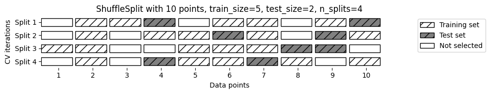
Puede usar enteros para
train_sizeytest_sizepara asignarles sus tamaños absolutos, o números de tipo flotante para usar fracciones del conjunto de datos. El siguiente código divide el conjunto de datos en un 50% de entrenamiento y un 50% de prueba para 10 iteraciones
from sklearn.model_selection import ShuffleSplit
shuffle_split = ShuffleSplit(n_splits=10, train_size=0.1, test_size=0.2, random_state=42)
scores = cross_val_score(logreg, X, y, cv=shuffle_split)
print("Cross-validation scores with partial coverage of the dataset:\n", scores)
print("Mean score: {:.3f}".format(scores.mean()))
Cross-validation scores with partial coverage of the dataset:
[0.85 0.85 0.95 0.85 0.5 0.9 0.85 0.85 0.95 0.75]
Mean score: 0.830
La validación cruzada aleatoria permite ajustar el número de iteraciones y
usar solo una parte de los datos en cada iteración, lo cual es útil para grandes conjuntos de datos. La variante estratificada,StratifiedShuffleSplit, ofrece resultados más fiables en tareas de clasificación.
9.1.8. Validación cruzada por grupos GroupKFold#
GroupKFold
Digamos que quieres construir un sistema para reconocer emociones a partir de imágenes de rostros (o imágenes médicas), y se recopila un conjunto de datos con imágenes de 100 personas, donde cada persona es capturada varias veces, mostrando varias emociones.
El objetivo es construir un clasificador que pueda identificar correctamente las emociones de las personas que no están en el conjunto de datos.
GroupKFoldes una variación dek-foldque garantiza que el mismo grupo no esté representado en los conjuntos de prueba y de entrenamiento.
Observación
La validación cruzada estratificada puede medir el rendimiento de un clasificador, pero si hay imágenes de la misma persona en los conjuntos de entrenamiento y prueba, el modelo reconocerá más fácilmente emociones en rostros ya vistos. Para evaluar mejor la generalización a nuevas caras, es recomendable usar
GroupKFold, que permiteseparar las imágenes por persona en los conjuntos de entrenamiento y prueba.
Este ejemplo ilustra cómo aplicar validación cruzada por grupos usando
GroupKFold, asegurando que las observaciones de un mismo grupo no se mezclen entre entrenamiento y prueba. Se usa un conjunto sintético de 12 datos divididos en 4 grupos, ideal para evitar fugas de información en contextos donde los datos están agrupados (como pacientes o dispositivos).
from sklearn.model_selection import GroupKFold
from sklearn.linear_model import LogisticRegression
from sklearn.datasets import make_classification
import numpy as np
Dataset sintético con 12 muestras y 4 grupos (pacientes)
X, y = make_classification(n_samples=12, n_features=5, random_state=42)
groups = [0, 0, 0, # Paciente 0
1, 1, 1, 1, # Paciente 1
2, 2, # Paciente 2
3, 3, 3] # Paciente 3
gkf = GroupKFold(n_splits=3)
for fold, (train_idx, test_idx) in enumerate(gkf.split(X, y, groups)):
model = LogisticRegression()
model.fit(X[train_idx], y[train_idx])
score = model.score(X[test_idx], y[test_idx])
train_groups = set(np.array(groups)[train_idx])
test_groups = set(np.array(groups)[test_idx])
print(f"\nFold {fold+1}")
print(f"Train indices: {train_idx}")
print(f"Test indices: {test_idx}")
print(f"Train groups: {train_groups}")
print(f"Test groups: {test_groups}")
print(f"Score: {score:.2f}")
Fold 1
Train indices: [ 0 1 2 7 8 9 10 11]
Test indices: [3 4 5 6]
Train groups: {0, 2, 3}
Test groups: {1}
Score: 0.75
Fold 2
Train indices: [0 1 2 3 4 5 6]
Test indices: [ 7 8 9 10 11]
Train groups: {0, 1}
Test groups: {2, 3}
Score: 0.40
Fold 3
Train indices: [ 3 4 5 6 7 8 9 10 11]
Test indices: [0 1 2]
Train groups: {1, 2, 3}
Test groups: {0}
Score: 0.67
Como puede ver, para cada división, cada grupo está completamente en el conjunto de entrenamiento o completamente en el conjunto de prueba. Además, observe que los pliegues no tienen exactamente el mismo tamaño debido al desequilibrio de los datos.
Hay más estrategias de división para la validación cruzada en
scikit-learn, que pueden utilizarse para una variedad aún mayor de casos (ver Cross-validation: evaluating estimator performance). Sin embargo, elKFoldestándar, elStratifiedKFoldy elGroupKFoldson, como mucho, los más utilizados. En el siguiente link puede encontrar la documentación relacionada con el uso de cada parámetro de la funciónsklearn.model_selection.cross_val_score(ver Evaluate a score by cross-validation).
9.2. Grid Search#
Ahora que sabemos cómo evaluar el grado de generalización de un modelo, podemos dar el siguiente paso y mejorar el rendimiento de la generalización del modelo ajustando sus parámetros. Es importante entender lo que significan los parámetros antes de intentar ajustarlos. Encontrar los valores de los parámetros relevantes de un modelo (los que proporcionan el mejor rendimiento de generalización) es una tarea complicada, pero necesaria para casi todos los modelos y conjuntos de datos.
Al ser una tarea tan común, existen métodos estándar en
scikit-learnpara ayudarle con ello. El método más utilizado es lagrid search, que básicamente significa probar todas las combinaciones posibles de los parámetros de interés. Considere el caso de un SVM con unkernel RBF(función de base radial), como implementado en la claseSVC. Hay dos parámetros importantes: el ancho de banda del kernel,gamma, y el parámetro de regularización,C.Digamos que queremos probar los valores 0.001, 0.01, 0.1, 1, 10 y 100 para el parámetro
C, y lo mismo paragamma. Como tenemos seis ajustes diferentes paraCygammaque queremos probar, tenemos 36 combinaciones de parámetros en total. Al ver todas las combinaciones posibles, se crea una tabla (o red) de parámetros para `SVM, como se muestra aquí:
{kind=link}
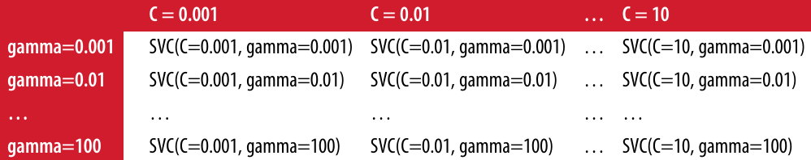
9.2.1. Grid Search simple#
Podemos implementar un
grid searchsobre los dos parámetros usando un par de ciclos for, entrenando y evaluando un clasificador para cada combinación
from sklearn.svm import SVC
X_train, X_test, y_train, y_test = train_test_split(iris.data, iris.target, random_state=0)
print("Size of training set: {} size of test set: {}".format(X_train.shape[0], X_test.shape[0]))
best_score = 0
Size of training set: 112 size of test set: 38
for gamma in [0.001, 0.01, 0.1, 1, 10, 100]:
for C in [0.001, 0.01, 0.1, 1, 10, 100]:
svm = SVC(gamma=gamma, C=C)
svm.fit(X_train, y_train)
score = svm.score(X_test, y_test)
if score > best_score:
best_score = score
best_parameters = {'C': C, 'gamma': gamma}
print("Best score: {:.2f}".format(best_score))
print("Best parameters: {}".format(best_parameters))
Best score: 0.97
Best parameters: {'C': 100, 'gamma': 0.001}
9.2.2. El peligro de sobreajustar los parámetros y el conjunto de validación#
Teniendo en cuenta este resultado, podríamos tener la tentación de decir que hemos encontrado un modelo que funciona con un 97% de precisión en nuestro conjunto de datos. Sin embargo, esta afirmación podría ser demasiado optimista (o simplemente errónea), por la siguiente razón: hemos probado muchos parámetros diferentes y se seleccionó el que tenía la mejor precisión en el conjunto de prueba, pero
esta precisión no necesariamente la obtendremos con nuevos datos.Como hemos utilizado los datos de prueba para ajustar los parámetros, ya no podemos utilizarlos para evaluar la calidad del modelo. Esta es la misma razón por la que necesitamos dividir los datos en conjuntos de entrenamiento y de prueba;
necesitamos un conjunto de datos independiente para evaluar, uno que no se haya utilizado para crear el modelo.Una forma de resolver este problema es dividir los datos de nuevo, de modo que tengamos tres conjuntos: el conjunto de entrenamiento para construir el modelo, el conjunto de validación (o desarrollo) para seleccionar los parámetros del modelo, y el conjunto de prueba para evaluar el rendimiento de los parámetros seleccionados
mglearn.plots.plot_threefold_split()
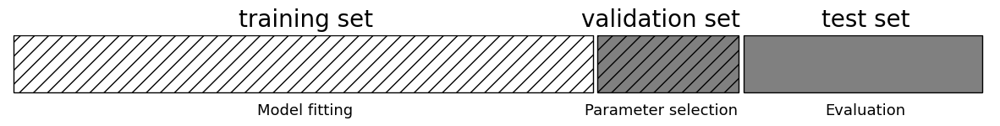
Después de seleccionar los mejores parámetros utilizando el conjunto de validación, podemos reconstruir un modelo utilizando los parámetros ajustados que encontramos, pero ahora entrenado tanto en los datos de entrenamiento y los datos de validación. De esta forma, podemos utilizar tantos datos como sea posible para construir nuestro modelo. Esto nos lleva a la siguiente implementación
from sklearn.svm import SVC
Dividimos los datos en conjunto de entrenamiento+validación y conjunto de prueba
X_trainval, X_test, y_trainval, y_test = train_test_split(iris.data, iris.target, random_state=0)
Dividimos el conjunto de entrenamiento+validación en conjuntos de entrenamiento y validación
X_train, X_valid, y_train, y_valid = train_test_split(X_trainval, y_trainval, random_state=1)
print("Size of training set: {} size of validation set: {} size of test set: {}\n".
format(X_train.shape[0], X_valid.shape[0], X_test.shape[0]))
Size of training set: 84 size of validation set: 28 size of test set: 38
best_score = 0
for gamma in [0.001, 0.01, 0.1, 1, 10, 100]:
for C in [0.001, 0.01, 0.1, 1, 10, 100]:
svm = SVC(gamma=gamma, C=C)
svm.fit(X_train, y_train) # Ajuste del modelo SVC
score = svm.score(X_valid, y_valid) # Score para selección de parámetros
if score > best_score:
best_score = score
best_parameters = {'C': C, 'gamma': gamma} # Almacenamos el mejor score y sus parámetros
Reconstruimos el modelo en el conjunto combinado de entrenamiento y validación, y lo evaluamos en el conjunto de prueba
svm = SVC(**best_parameters)
svm.fit(X_trainval, y_trainval)
test_score = svm.score(X_test, y_test)
print("Best score on validation set: {:.2f}".format(best_score))
print("Best parameters: ", best_parameters)
print("Test set score with best parameters: {:.2f}".format(test_score))
Best score on validation set: 0.96
Best parameters: {'C': 10, 'gamma': 0.001}
Test set score with best parameters: 0.92
El mejor score en el conjunto de validación es del 96%: ligeramente inferior a la anterior, probablemente porque utilizamos menos datos para entrenar el modelo (X_train es menor ahora porque dividimos nuestro conjunto de datos dos veces). Sin embargo, el score en el conjunto de prueba, el que realmente nos dice que tan buena es la generalización, es aún más bajo, un 92%. Así que solo podemos afirmar que clasificamos los nuevos datos con un 92% de acierto, y no con un 97% como pensábamos antes.
La distinción entre el conjunto de entrenamiento, el conjunto de validación y el conjunto de prueba es fundamentalmente importante para aplicar los métodos de aprendizaje automático en la práctica. Cualquier decisión tomada basada en la precisión del conjunto de prueba
“filtra” información del conjunto de prueba al modelo. Por lo tanto, es fundamental mantener un conjunto de prueba separado, que solo se utiliza para la evaluación final.Es una buena práctica realizar todo el análisis exploratorio (EDA) y la selección del modelo utilizando la combinación de entrenamiento y validación, y reservar el conjunto de prueba para la evaluación final, incluso en el caso de la visualización exploratoria. En sentido estricto, evaluar más de un modelo en el conjunto de prueba y elegir el mejor de los dos resultará en una estimación demasiado optimista de la precisión del modelo.
9.2.3. Grid Search con validación cruzada#
Aunque el método de dividir los datos en un conjunto de entrenamiento, uno de validación y otro de prueba que acabamos de ver es factible y se utiliza con relativa frecuencia, es bastante sensible a la forma en que se dividen los datos. De la salida del fragmento de código anterior podemos ver que el
grid-searchselecciona'C': 10, 'gamma': 0.001, como los mejores parámetros, mientras que la salida del código de la sección anterior selecciona'C': 100, 'gamma': 0.001como los mejores parámetros.Para una mejor estimación del rendimiento de la generalización, en lugar de usar una única división en un conjunto de entrenamiento y otro de validación, podemos usar la validación cruzada para evaluar el rendimiento de cada combinación de parámetros. Este método puede codificarse como sigue:
import numpy as np
for gamma in [0.001, 0.01, 0.1, 1, 10, 100]:
for C in [0.001, 0.01, 0.1, 1, 10, 100]:
svm = SVC(gamma=gamma, C=C) # Entrena SVC para cada parámetro
scores = cross_val_score(svm, X_trainval, y_trainval, cv=5) # Calcula validación cruzada
score = np.mean(scores) # Calcula media de la validación cruzada para precisión
if score > best_score:
best_score = score
best_parameters = {'C': C, 'gamma': gamma}
Reconstruimos el modelo en el conjunto combinado de entrenamiento y validación
svm = SVC(**best_parameters)
svm.fit(X_trainval, y_trainval)
SVC(C=10, gamma=0.1)In a Jupyter environment, please rerun this cell to show the HTML representation or trust the notebook.
On GitHub, the HTML representation is unable to render, please try loading this page with nbviewer.org.
SVC(C=10, gamma=0.1)
Para evaluar la precisión de
SVMutilizando un ajuste particular deCygammacon5-foldvalidación cruzada, necesitamos entrenar 36 * 5 = 180 modelos. Como puede imaginarse el principal inconveniente del uso de la validación cruzada es el tiempo que lleva entrenar todos estos modelos. La siguiente visualización ilustra cómo se selecciona la mejor configuración de parámetros en el código anterior
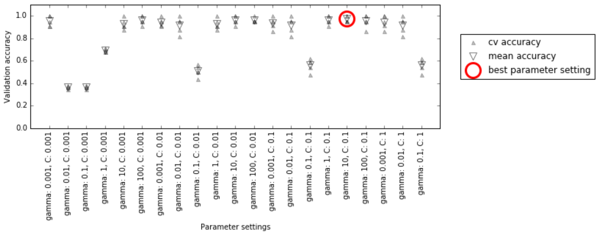
Para cada ajuste de parámetros (sólo se muestra un subconjunto), se calculan cinco valores de precisión, uno para cada división en la validación cruzada. A continuación, se calcula la precisión media de la validación para cada parámetro. Se eligen los parámetros con la mayor precisión media de validación, marcados con un círculo.
Observación
Como hemos dicho antes, la validación cruzada es una forma de evaluar un determinado algoritmo en un conjunto de datos específico. Sin embargo, a menudo se utiliza junto con métodos de búsqueda de parámetros como Grid Search. Por esta razón, normalmente se utiliza el término validación cruzada coloquialmente para referirse a un Grid Search con validación cruzada.
El proceso general de división de los datos, la ejecución de
grid searchy la evaluación de los parámetros finales se ilustra en la siguiente figura
{kind=link}
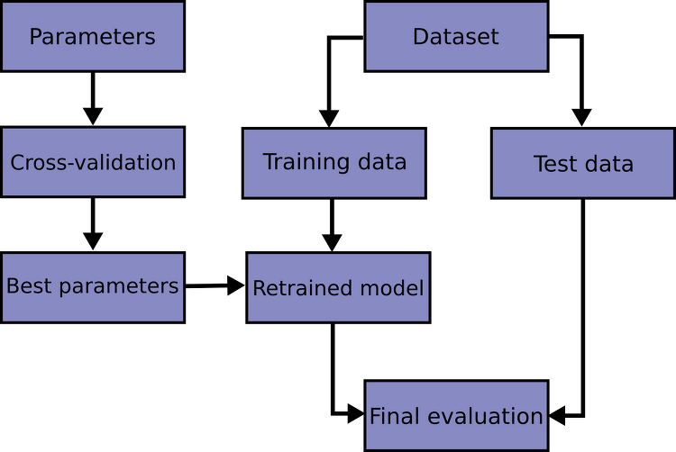
Fig. 9.1 Resumen del proceso de selección de parámetros y evaluación de modelos con GridSearchCV.#
Debido a que
grid searchcon validación cruzada es un método tan comúnmente utilizado para ajustar parámetros,scikit-learnproporciona la claseGridSearchCV, que lo implementa en la forma de un estimador. Para utilizar la claseGridSearchCV, primero hay que especificar los parámetros sobre los que se quiere buscar utilizando un diccionario.A continuación,
GridSearchCVrealizará todos los ajustes necesarios del modelo. Las claves (keys) del diccionario son los nombres de los parámetros que queremos ajustar (tal y como se indican cuando se construye el modelo, en este caso,Cygamma), y los valores (values) son los ajustes de los parámetros que queremos probar. Probar los valores 0,001, 0,01, 0,1, 1, 10 y 100 paraCygammase traduce en lo siguiente diccionario
param_grid = {'C': [0.001, 0.01, 0.1, 1, 10, 100],
'gamma': [0.001, 0.01, 0.1, 1, 10, 100]}
print("Parameter grid:\n{}".format(param_grid))
Parameter grid:
{'C': [0.001, 0.01, 0.1, 1, 10, 100], 'gamma': [0.001, 0.01, 0.1, 1, 10, 100]}
Ahora podemos instanciar la clase
GridSearchCVcon el modelo(SVC), el parámetro a buscar (param_grid), y la estrategia de validación cruzada que queremos utilizar (digamos validación cruzada estratificada 5-fold):
from sklearn.model_selection import GridSearchCV
from sklearn.svm import SVC
grid_search = GridSearchCV(SVC(), param_grid, cv=5)
GridSearchCVutilizará la validación cruzada en lugar de la división en un conjunto de entrenamiento y de prueba que utilizábamos antes. Sin embargo, todavía tenemos que dividir los datos en un conjunto de entrenamiento y otro de prueba, para evitar el sobreajuste de los parámetros
X_train, X_test, y_train, y_test = train_test_split(iris.data, iris.target, random_state=0)
El objeto
grid_searchque hemos creado se comporta como un clasificador; podemos llamar a los métodos estándarfit, predictyscore. Sin embargo, cuando llamamos a fit, se ejecutará una validación cruzada para cada combinación de parámetros que hayamos especificado enparam_grid
grid_search.fit(X_train, y_train)
GridSearchCV(cv=5, estimator=SVC(),
param_grid={'C': [0.001, 0.01, 0.1, 1, 10, 100],
'gamma': [0.001, 0.01, 0.1, 1, 10, 100]})In a Jupyter environment, please rerun this cell to show the HTML representation or trust the notebook. On GitHub, the HTML representation is unable to render, please try loading this page with nbviewer.org.
GridSearchCV(cv=5, estimator=SVC(),
param_grid={'C': [0.001, 0.01, 0.1, 1, 10, 100],
'gamma': [0.001, 0.01, 0.1, 1, 10, 100]})SVC()
SVC()
El objeto
GridSearchCVno solo busca los mejores parámetros, sino que también automáticamente un nuevo modelo en todo el conjunto de datos de entrenamiento con los parámetros que han dado el mejor rendimiento en la validación cruzada. La claseGridSearchCVproporciona una interfaz muy conveniente para acceder al modelo reentrenado utilizando los métodospredictyscore. Para evaluar lo bien que generalizan los mejores parámetros encontrados, podemos llamar ascoreen el conjunto de prueba
print("Test set score: {:.2f}".format(grid_search.score(X_test, y_test)))
Test set score: 0.97
Al elegir los parámetros mediante la validación cruzada, encontramos un modelo que alcanza el 97% de precisión en el conjunto de prueba. Lo importante aquí es que no utilizamos el conjunto de prueba para elegir los parámetros. Los parámetros encontrados se anotan en el atributo
best_params_y la mejor precisión de la validación cruzada (la precisión media sobre las diferentes divisiones para esta configuración de parámetros) se almacena enbest_score_
print("Best parameters: {}".format(grid_search.best_params_))
print("Best cross-validation score: {:.2f}".format(grid_search.best_score_))
Best parameters: {'C': 10, 'gamma': 0.1}
Best cross-validation score: 0.97
Observación
De nuevo, tenga cuidado de no confundir best_score_ con el rendimiento de generalización del modelo calculado por el método score en el conjunto de prueba. El uso del método score (o la evaluación de la salida del método de predicción) emplea un modelo entrenado en todo el conjunto de entrenamiento. El atributo best_score_ almacena la precisión media de la validación cruzada, con la validación cruzada realizada en el conjunto de entrenamiento.
A veces es útil tener acceso al modelo real que se encontró, por ejemplo, para ver los coeficientes o la importancia de las características. Puede acceder al modelo con los mejores parámetros entrenados en todo el conjunto de entrenamiento utilizando el atributo
best_estimator_
print("Best estimator:\n{}".format(grid_search.best_estimator_))
Best estimator:
SVC(C=10, gamma=0.1)
Como el propio
grid_searchtiene métodos de predicción y score, no es necesario utilizarbest_estimator_para hacer predicciones o evaluar el modelo.
9.2.4. Análisis del resultado de la validación cruzada#
A menudo es útil visualizar los resultados de la validación cruzada, para entender cómo la generalización del modelo depende de los parámetros que estamos buscando. Como los
grid searchson bastante costosos desde el punto de vista computacional, a menudo es una buena idea empezar con grids de múltiples medidas, ya sean grandes o pequeños.A continuación, podemos inspeccionar los resultados del
grid searchvalidado, y posiblemente ampliar nuestra búsqueda. Los resultados de ungrid searchse pueden encontrar en el atributocv_results_, que es un diccionario que almacena todos los aspectos de la búsqueda. Este contiene muchos detalles, como se puede ver en la siguiente salida, y es mejor verlo después de convertirlo en unDataFramedepandas.Mostramos solo algunas columnas, para que se puedan diferenciar en el jbook, pero en su máquina puede visualizarla todas usando la orden
results.head().GridSearchCV.cv_results_incluye los resultados de tiempo para scoring y ajuste de parámetros en cada pliegue. Por ejemplomean_score_timees la cantidad media de tiempo que se necesita para scoring en los datos de cada plieguecv, para cada conjunto de parámetros que definió en elgrid-search.
import pandas as pd
results = pd.DataFrame(grid_search.cv_results_)
results[['mean_fit_time', 'std_fit_time', 'mean_score_time',
'std_score_time', 'param_C', 'param_gamma']].head()
| mean_fit_time | std_fit_time | mean_score_time | std_score_time | param_C | param_gamma | |
|---|---|---|---|---|---|---|
| 0 | 0.000562 | 0.000246 | 0.000291 | 0.000039 | 0.001 | 0.001 |
| 1 | 0.000412 | 0.000009 | 0.000274 | 0.000050 | 0.001 | 0.01 |
| 2 | 0.000417 | 0.000013 | 0.000235 | 0.000008 | 0.001 | 0.1 |
| 3 | 0.000414 | 0.000009 | 0.000230 | 0.000003 | 0.001 | 1 |
| 4 | 0.000426 | 0.000027 | 0.000239 | 0.000013 | 0.001 | 10 |
Cada fila de resultados corresponde a un ajuste de parámetros concreto. Para cada ajuste, se registran los resultados de todas las divisiones de validación cruzada, así como la media y la desviación estándar de todas las divisiones. Como buscamos una red bidimensional de parámetros (
C y gamma), esto se visualiza mejor como un mapa de calor. Primero extraemos las puntuaciones medias de la validación y luego las reformamos para que los ejes correspondan aC y gamma.
scores = np.array(results.mean_test_score).reshape(6, 6)
import seaborn as sns
import matplotlib.pyplot as plt
plt.figure(figsize=(8, 6))
sns.heatmap(scores, annot=True, fmt=".2f", cmap="viridis",
xticklabels=param_grid['gamma'], yticklabels=param_grid['C'])
plt.xlabel("gamma")
plt.ylabel("C")
plt.title("Grid Search Scores")
plt.show()
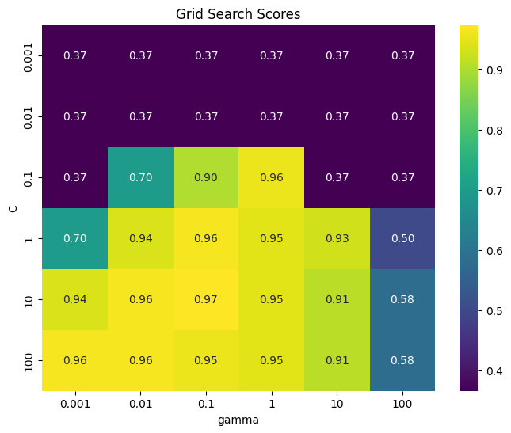
Cada punto del mapa de calor corresponde a una ejecución de validación cruzada, con un parámetro en particular. El color codifica la precisión de la validación cruzada, siendo los colores claros los relacionados con alta precisión y los colores oscuros con baja precisión. Se puede ver que SVC es muy sensible a la configuración de los parámetros. Para muchos de los ajustes de los parámetros, la precisión está en torno al 37%, lo que es bastante malo; para otros ajustes, la precisión está en torno al 96%.
De este gráfico se desprenden varias cosas. En primer lugar, los parámetros que ajustamos son muy importantes para obtener un buen rendimiento. Ambos parámetros (C y gamma) son muy importantes, ya que su ajuste puede cambiar la precisión del 37% al 96%. Además, los rangos que elegimos para los parámetros son rangos en los que vemos cambios significativos en el resultado. También es importante tener en cuenta que los rangos de los parámetros son lo suficientemente amplios: los valores óptimos de cada parámetro no están en los bordes del gráfico.
Veamos algunos gráficos en los que el resultado es menos ideal, porque los rangos de búsqueda no fueron elegidos correctamente
import numpy as np
import matplotlib.pyplot as plt
import seaborn as sns
from sklearn.model_selection import GridSearchCV
from sklearn.svm import SVC
import mglearn
import numpy as np
import matplotlib.pyplot as plt
import seaborn as sns
from sklearn.model_selection import GridSearchCV
from sklearn.svm import SVC
# Definir los grids de hiperparámetros
param_grid_linear = {'C': np.linspace(1, 2, 6), 'gamma': np.linspace(1, 2, 6)}
param_grid_one_log = {'C': np.linspace(1, 2, 6), 'gamma': np.logspace(-3, 2, 6)}
param_grid_range = {'C': np.logspace(-3, 2, 6), 'gamma': np.logspace(-7, -2, 6)}
fig, axes = plt.subplots(1, 3, figsize=(15, 5))
for param_grid, ax in zip([param_grid_linear, param_grid_one_log, param_grid_range], axes):
grid_search = GridSearchCV(SVC(), param_grid, cv=5)
grid_search.fit(X_train, y_train)
scores = grid_search.cv_results_['mean_test_score'].reshape(6, 6)
def format_tick(val):
"""Formatea el número con notación científica si tiene más de 4 cifras decimales"""
return f"{val:.3f}" if abs(val) >= 0.001 else f"{val:.1e}"
xticklabels = [format_tick(val) for val in param_grid['gamma']]
yticklabels = [format_tick(val) for val in param_grid['C']]
sns.heatmap(scores, annot=True, fmt=".2f", cmap="viridis", ax=ax)
ax.set_xticklabels(xticklabels)
ax.set_yticklabels(yticklabels)
ax.set_xlabel("gamma")
ax.set_ylabel("C")
plt.tight_layout()
plt.show()
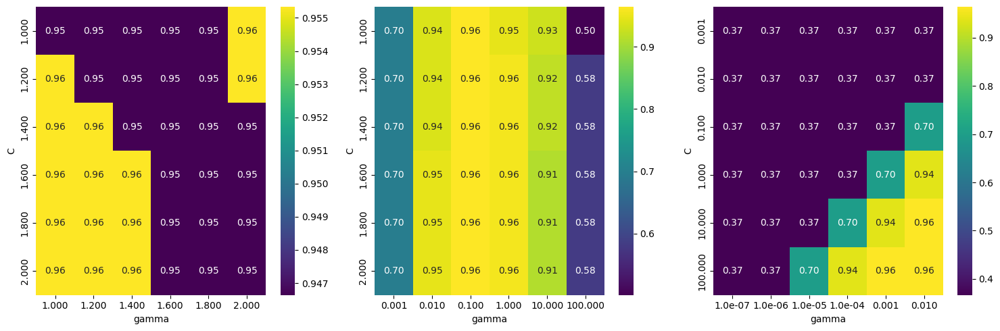
El primer panel no muestra ningún cambio, con scores aproximadamente constantes en toda la red de parámetros. En este caso, esto se debe a una escala y un rango inadecuado para los parámetros
Cygamma. Sin embargo, si no se aprecia ningún cambio en la precisión a lo largo de los diferentes ajustes de los parámetros, también puede ser que un parámetro no sea importante en absoluto.Suele ser bueno probar primero valores muy extremos, para ver si hay algún cambio en la precisión como resultado de cambiar un parámetro. El segundo panel muestra un patrón de rayas verticales. Esto indica que solo el ajuste del parámetro
gammahace alguna diferencia. Esto podría significar que el parámetro gamma busca valores interesantes, pero el parámetro C no lo hace, o podría significar que el parámetro C no es importante.El tercer panel muestra cambios tanto en C como en gamma. Sin embargo, podemos ver que en toda la parte inferior izquierda del gráfico, no ocurre nada interesante. Probablemente, podemos excluir los valores muy pequeños de las futuras búsquedas en la red. La configuración óptima de los parámetros está en la parte superior derecha. Como el óptimo está en el borde del gráfico, podemos esperar que puede haber valores aún mejores más allá de este límite, y podríamos cambiar nuestro rango de búsqueda para incluir más parámetros en esta región.
Ajustar la red de parámetros basándose en las puntuaciones de validación cruzada es perfectamente correcto, y una buena manera de explorar la importancia de los diferentes parámetros. Sin embargo, no debería probar diferentes rangos de parámetros en el conjunto de pruebas final, ya que, como hemos dicho antes, la evaluación del conjunto de pruebas solo debería realizarse una vez que sepamos exactamente qué modelo queremos utilizar.
9.2.5. Búsqueda sobre espacios que no son una red#
En algunos casos, probar todas las combinaciones posibles de todos los parámetros, como suele hacer
GridSearchCV, no es una buena idea. Por ejemplo,SVCtiene un parámetro dekernel, y dependiendo delkernelque se elija, otros parámetros serán relevantes. Sikernel='linear', el modelo es lineal, y solo se utiliza el parámetroC. Sikernel='rbf', se utilizan los parámetrosC y gamma(pero no otros parámetros como el grado).En este caso, la búsqueda de todas las combinaciones posibles de
C, gamma y kernelno tendría sentido: sikernel='linear', gammano se utiliza, y probar diferentes valores degammasería una pérdida de tiempo. Recuerde quekernel='rbf'es el kernel de función de base radial (RBF) con mapeo de características \(\phi(\boldsymbol{x})=\exp(\|\boldsymbol{x}-x_{i}\|/2\sigma^2),~\gamma=1/\sigma^2\). Para ver todas las opciones de kernel gaussiano (ver Kernels for Gaussian Processes).Para tratar este tipo de parámetros “condicionales”,
GridSearchCVpermite queparam_gridsea una lista de diccionarios. Cada diccionario de la lista se expande en una red(grid)independiente. Una posible búsqueda en red que incluya el núcleo (kernel) y los parámetros podría ser así:
param_grid = [{'kernel': ['rbf'],
'C': [0.001, 0.01, 0.1, 1, 10, 100],
'gamma': [0.001, 0.01, 0.1, 1, 10, 100]},
{'kernel': ['linear'],
'C': [0.001, 0.01, 0.1, 1, 10, 100]}]
print("List of grids:\n{}".format(param_grid))
List of grids:
[{'kernel': ['rbf'], 'C': [0.001, 0.01, 0.1, 1, 10, 100], 'gamma': [0.001, 0.01, 0.1, 1, 10, 100]}, {'kernel': ['linear'], 'C': [0.001, 0.01, 0.1, 1, 10, 100]}]
En la primera red, el parámetro del
kernelse establece siempre en'rbf'(no que la entrada dekerneles una lista de longitud uno), y se varían los parámetrosCygamma. En la segunda red, el parámetro kernel siempre se establece como lineal, y sólo se varía C. Ahora apliquemos esta búsqueda de parámetros más compleja
grid_search = GridSearchCV(SVC(), param_grid, cv=5)
grid_search.fit(X_train, y_train)
print("Best parameters: {}".format(grid_search.best_params_))
print("Best cross-validation score: {:.2f}".format(grid_search.best_score_))
Best parameters: {'C': 10, 'gamma': 0.1, 'kernel': 'rbf'}
Best cross-validation score: 0.97
Observemos de nuevo el
cv_results_. Como era de esperar, si el núcleo es"lineal", sólo varíaC. Nótese que el pandas tiene un total de 16 columnas.
results = pd.DataFrame(grid_search.cv_results_)
display(results.T.iloc[: , :6])
results.T.shape
| 0 | 1 | 2 | 3 | 4 | 5 | |
|---|---|---|---|---|---|---|
| mean_fit_time | 0.000476 | 0.000407 | 0.000416 | 0.000423 | 0.000417 | 0.000482 |
| std_fit_time | 0.000104 | 0.000008 | 0.000016 | 0.000011 | 0.00001 | 0.000013 |
| mean_score_time | 0.000265 | 0.000235 | 0.000257 | 0.000254 | 0.00027 | 0.000253 |
| std_score_time | 0.000044 | 0.000008 | 0.00003 | 0.000042 | 0.000062 | 0.000015 |
| param_C | 0.001 | 0.001 | 0.001 | 0.001 | 0.001 | 0.001 |
| param_gamma | 0.001 | 0.01 | 0.1 | 1 | 10 | 100 |
| param_kernel | rbf | rbf | rbf | rbf | rbf | rbf |
| params | {'C': 0.001, 'gamma': 0.001, 'kernel': 'rbf'} | {'C': 0.001, 'gamma': 0.01, 'kernel': 'rbf'} | {'C': 0.001, 'gamma': 0.1, 'kernel': 'rbf'} | {'C': 0.001, 'gamma': 1, 'kernel': 'rbf'} | {'C': 0.001, 'gamma': 10, 'kernel': 'rbf'} | {'C': 0.001, 'gamma': 100, 'kernel': 'rbf'} |
| split0_test_score | 0.347826 | 0.347826 | 0.347826 | 0.347826 | 0.347826 | 0.347826 |
| split1_test_score | 0.347826 | 0.347826 | 0.347826 | 0.347826 | 0.347826 | 0.347826 |
| split2_test_score | 0.363636 | 0.363636 | 0.363636 | 0.363636 | 0.363636 | 0.363636 |
| split3_test_score | 0.363636 | 0.363636 | 0.363636 | 0.363636 | 0.363636 | 0.363636 |
| split4_test_score | 0.409091 | 0.409091 | 0.409091 | 0.409091 | 0.409091 | 0.409091 |
| mean_test_score | 0.366403 | 0.366403 | 0.366403 | 0.366403 | 0.366403 | 0.366403 |
| std_test_score | 0.022485 | 0.022485 | 0.022485 | 0.022485 | 0.022485 | 0.022485 |
| rank_test_score | 27 | 27 | 27 | 27 | 27 | 27 |
(16, 42)
Uso de diferentes estrategias de validación cruzada con la búsqueda en red
Al igual que cross_val_score, GridSearchCV utiliza por defecto la validación cruzada estratificada k-fold para la clasificación, y la validación cruzada k-fold para la regresión. Sin embargo, también puede pasar cualquier divisor de validación cruzada, como se describe en “Más control sobre la validación cruzada”, como parámetro cv en GridSearchCV. En particular, para obtener una única división en un conjunto de entrenamiento y otro de validación, puede utilizar ShuffleSplit o StratifiedShuffleSplit con n_iter=1 (número de iteraciones de reordenamiento y división). Esto puede ser útil para conjuntos de datos muy grandes o para modelos muy lentos.
9.2.6. Validación cruzada anidada#
La validación cruzada anidada mejora la estabilidad de la evaluación del modelo al evitar depender de una sola partición de entrenamiento/prueba. Consiste en un bucle externo de validación cruzada que evalúa el rendimiento general del modelo y un bucle interno (GridSearchCV) que ajusta los hiperparámetros.
El resultado son puntuaciones más realistas sobre la capacidad de generalización, pero no genera un modelo final entrenado. Es útil para evaluación comparativa de modelos, no para producción. Se implementa fácilmente con
cross_val_score(GridSearchCV(...)).
scores = cross_val_score(GridSearchCV(SVC(), param_grid, cv=5), iris.data, iris.target, cv=5)
print("Cross-validation scores: ", scores)
print("Mean cross-validation score: ", scores.mean())
Cross-validation scores: [0.96666667 1. 0.9 0.96666667 1. ]
Mean cross-validation score: 0.9666666666666668
La validación cruzada anidada muestra que SVC alcanza un 96.67% de precisión media en el conjunto
iris, usando validación cruzada estratificada de 5 pliegues en bucles interno y externo. Con 36 combinaciones de parámetros, se entrenan 900 modelos (36 × 5 × 5), lo que implica un alto costo computacional. Aunque aquí se usa el mismo divisor para ambos bucles, pueden combinarse distintas estrategias, y visualizar el proceso como buclesforfacilita su comprensión.
def nested_cv(X, y, inner_cv, outer_cv, Classifier, parameter_grid):
outer_scores = []
for training_samples, test_samples in outer_cv.split(X, y):
best_parms = {}
best_score = -np.inf
for parameters in parameter_grid:
cv_scores = []
for inner_train, inner_test in inner_cv.split(X[training_samples], y[training_samples]):
clf = Classifier(**parameters)
clf.fit(X[inner_train], y[inner_train])
score = clf.score(X[inner_test], y[inner_test])
cv_scores.append(score)
mean_score = np.mean(cv_scores)
if mean_score > best_score:
best_score = mean_score
best_params = parameters
clf = Classifier(**best_params)
clf.fit(X[training_samples], y[training_samples])
outer_scores.append(clf.score(X[test_samples], y[test_samples]))
return np.array(outer_scores)
from sklearn.model_selection import ParameterGrid, StratifiedKFold
scores = nested_cv(iris.data, iris.target, StratifiedKFold(5),
StratifiedKFold(5), SVC, ParameterGrid(param_grid))
print("Cross-validation scores: {}".format(scores))
Cross-validation scores: [0.96666667 1. 0.96666667 0.96666667 1. ]
9.2.7. Paralelización de la validación cruzada y la búsqueda en red#
Aunque la ejecución de grid search sobre múltiples parámetros y grandes conjuntos de datos puede ser computacionalmente exigente, su naturaleza independiente entre combinaciones de parámetros y particiones de validación cruzada permite una paralelización eficiente en múltiples núcleos o clústeres.
En
GridSearchCVycross_validation, el parámetron_jobscontrola el número de núcleos utilizados (n_jobs=-1emplea todos). No obstante, scikit-learn no permite anidamiento de paralelización: si el modelo ya usan_jobs, no debe usarse enGridSearchCV. Además, en modelos o conjuntos de datos grandes, el uso intensivo de núcleos puede generar un consumo elevado de memoria, por lo que debe monitorearse.La paralelización también puede extenderse a varios nodos mediante el marco paralelo de IPython o mediante bucles personalizados. Para entornos Spark, el paquete
spark-sklearnpermite ejecutar búsquedas en red sobre un clúster ya configurado.
9.3. Métricas de evaluación y scoring#
Hasta ahora, hemos evaluado el rendimiento de la clasificación utilizando la precisión (accuracy) (la fracción de muestras correctamente clasificadas) y el rendimiento de la regresión mediante el \(R^2\). Sin embargo, éstas son sólo dos de las muchas formas posibles de resumir la eficacia de un modelo supervisado en un conjunto de datos determinado. En la práctica, estas métricas de evaluación pueden no ser apropiadas para su aplicación, y es importante elegir la métrica correcta cuando se selecciona entre modelos y se ajustan los parámetros.
9.3.1. Tenga en cuenta el objetivo final#
Al elegir una métrica en aprendizaje automático, debe alinearse con el objetivo final de la aplicación, conocido como métrica de negocio, ya que las predicciones influyen en la toma de decisiones y el impacto empresarial. Por ejemplo, podría buscar reducir accidentes, minimizar hospitalizaciones o aumentar ingresos.
La selección del modelo y sus parámetros debe maximizar el impacto positivo en la métrica de negocio, pero evaluarlo en producción puede ser riesgoso. Por ello, se emplean métricas sustitutas más fáciles de calcular, como la
precisionen la clasificación de imágenes. Sin embargo, estas métricas deben acercarse lo más posible al objetivo real.El impacto empresarial puede no reducirse a un solo número (por ejemplo, más clientes pero menor gasto por cliente), pero debe reflejar la influencia del modelo. En esta sección, se abordarán métricas para clasificación binaria, multiclase y regresión.
9.3.2. Métricas para la clasificación binaria#
La clasificación binaria es probablemente la aplicación más común y conceptualmente simple de aprendizaje automático en la práctica. Sin embargo, todavía hay una serie de advertencias en evaluar incluso esta sencilla tarea. Antes de entrar en las métricas alternativas, echemos un vistazo a la forma en que se mide la precisión, la cual puede ser engañosa. Recordemos que para la clasificación binaria, a menudo hablamos de una clase positiva y una clase negativa, entendiendo que la clase positiva es la que estamos buscando.
9.3.3. Tipos de errores#
precisión (
accuracy) no siempre es una buena medida del rendimiento, ya que los errores cometidos no reflejan toda la información relevante. Por ejemplo, en la detección temprana de cáncer, una prueba positiva implica más exámenes, mientras que una negativa considera al paciente sano. Dado que ningún modelo es perfecto, es crucial evaluar el impacto real de sus errores.Un falso positivo ocurre cuando un paciente sano es clasificado como enfermo, causando pruebas innecesarias y posibles preocupaciones. En cambio, un falso negativo, donde un paciente enfermo es clasificado como sano, puede ser fatal al retrasar el tratamiento. Estos errores se conocen como tipo I y tipo II, pero los términos falso positivo y falso negativo son más claros. En este contexto, es crítico minimizar los falsos negativos (
recall), aunque los falsos positivos sean una molestia.Las consecuencias de estos errores varían según la aplicación. En el ámbito comercial, se pueden asignar costos monetarios a cada tipo de error, permitiendo evaluar modelos más allá de la precisión, optimizando la toma de decisiones.
Un ejemplo donde el equilibrio es clave pede ser la detección de spam en correos electrónicos.
Reducir falsos negativos (correos spam que se clasifican como no spam): Si un correo malicioso pasa desapercibido, el usuario podría ser víctima de estafas o phishing.
Reducir falsos positivos (correos legítimos que se clasifican como spam): Correos importantes, como facturas o mensajes de trabajo, podrían perderse en la carpeta de spam.
9.3.4. Conjuntos de datos desequilibrados#
Los errores son cruciales cuando una clase es mucho más frecuente que otra, como en la predicción de clicks, donde la mayoría de los elementos mostrados no reciben interacción. En estos casos, los datos están desequilibrados, con una gran mayoría perteneciente a la clase “no click”.
Dado que los eventos de interés suelen ser raros, un modelo con 99% para
accuracypodría simplemente predecir siempre “no click” sin aportar valor real. Por ello, la precisión no distingue entre un modelo trivial y uno efectivo. Para ilustrarlo, se creará un conjunto de datos desequilibrado 9:1 con el conjunto digits, clasificando el dígito 9 frente a los demás.
from sklearn.datasets import load_digits
from sklearn.model_selection import train_test_split
digits = load_digits()
print("Data shape: ", digits.data.shape, "; Target shape", digits.target.shape)
Data shape: (1797, 64) ; Target shape (1797,)
np.unique(digits.target)
array([0, 1, 2, 3, 4, 5, 6, 7, 8, 9])
np.unique(digits.data)
array([ 0., 1., 2., 3., 4., 5., 6., 7., 8., 9., 10., 11., 12.,
13., 14., 15., 16.])
y = digits.target == 9 # Boolean
X_train, X_test, y_train, y_test = train_test_split(digits.data, y, random_state=0)
Podemos utilizar
DummyClassifierpara predecir siempre la clase mayoritaria (aquí “not nine”) para ver lo poco informativa que puede ser el (accuracy)
from sklearn.dummy import DummyClassifier
import numpy as np
dummy_majority = DummyClassifier(strategy='most_frequent').fit(X_train, y_train)
pred_most_frequent = dummy_majority.predict(X_test)
print("Unique predicted labels: {}".format(np.unique(pred_most_frequent)))
print("Test score: {:.2f}".format(dummy_majority.score(X_test, y_test)))
Unique predicted labels: [False]
Test score: 0.90
Obtuvimos una precisión cercana al 90% sin aprender nada. Esto puede parecer sorprendente, pero pero piénselo un momento. Imagine que alguien le dice que su modelo tiene un 90% de precisión. Podrías pensar que han hecho un buen trabajo. Pero dependiendo del problema, ¡eso podría ser posible con sólo predecir una clase! Comparemos esto con el uso de un clasificador real.
from sklearn.tree import DecisionTreeClassifier
tree = DecisionTreeClassifier(max_depth=2).fit(X_train, y_train)
pred_tree = tree.predict(X_test)
print("Test score: {:.2f}".format(tree.score(X_test, y_test)))
Test score: 0.92
Según la precisión, el DecisionTreeClassifier es sólo ligeramente mejor que el predictor constante. Esto podría indicar que algo está mal en la forma en que utilizamos DecisionTreeClassifier, o bien que accuracy no es una buena medida en este caso. Para comparar, evaluemos otro clasificador,
LogisticRegression
from sklearn.linear_model import LogisticRegression
logreg = LogisticRegression(C=0.1).fit(X_train, y_train)
pred_logreg = logreg.predict(X_test)
print("logreg score: {:.2f}".format(logreg.score(X_test, y_test)))
logreg score: 0.98
El clasificador
dummycon resultados aleatorios es el peor segúnaccuracy, mientras queLogisticRegressionmuestra buenos resultados. Sin embargo,accuracyes inadecuada en entornos desequilibrados, dificultando la evaluación real del modelo. Exploraremos métricas alternativas que permitan seleccionar modelos de manera más efectiva, priorizando aquellas que indiquen cuánto mejor es un modelo en lugar de favorecer predicciones frecuentes o aleatorias. Una métrica adecuada debería descartar predicciones sin sentido.
9.3.5. Matrices de confusión#
Una de las formas más completas de representar el resultado de la evaluación de la clasificación binaria es el uso de matrices de confusión. Inspeccionemos las predicciones de
LogisticRegresde la sección anterior utilizando la funciónconfusion_matrix. Ya hemos almacenado las predicciones del conjunto de prueba enpred_logreg
from sklearn.metrics import confusion_matrix
confusion = confusion_matrix(y_test, pred_logreg)
print("Confusion matrix:\n{}".format(confusion))
Confusion matrix:
[[402 1]
[ 6 41]]
La salida de
confusion_matrixes una matriz de dos por dos, donde las filas corresponden a las clases verdaderas y las columnas corresponden a las clases predichas. Cada entrada cuenta la frecuencia con la que una muestra que pertenece a la clase correspondiente a la fila (aquí “not nine” y “nine”) fue clasificada como la clase correspondiente a la columna.
mglearn.plots.plot_confusion_matrix_illustration()
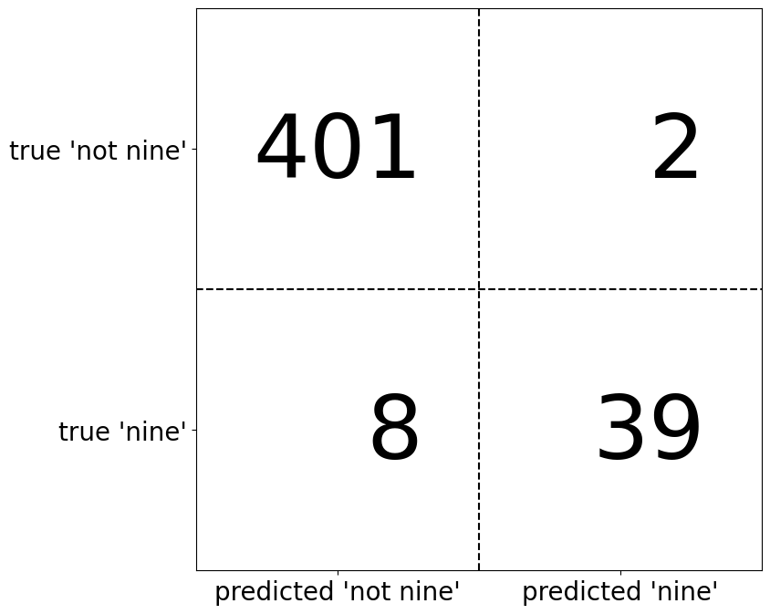
La diagonal principal de la matriz de confusión representa las clasificaciones correctas, mientras que las demás entradas indican errores. Si “nine” es la clase positiva, se pueden definir los términos falso positivo (FP) y falso negativo (FN). Además, las muestras correctamente clasificadas como positivas son verdaderos positivos (TP) y las negativas, verdaderos negativos (TN). Estos términos permiten interpretar la matriz de confusión.
mglearn.plots.plot_binary_confusion_matrix()
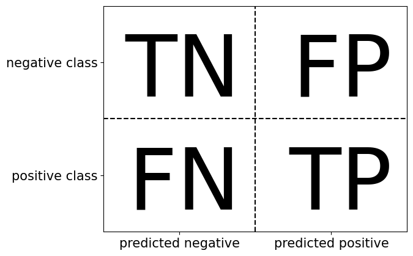
Ahora utilicemos la matriz de confusión para comparar los modelos que hemos ajustado antes (los dos modelos dummy, árbol de decisión y regresión logística)
print("\nDummy model:")
print(confusion_matrix(y_test, pred_most_frequent))
Dummy model:
[[403 0]
[ 47 0]]
print("\nDecision tree:")
print(confusion_matrix(y_test, pred_tree))
Decision tree:
[[390 13]
[ 24 23]]
print("\nLogistic Regression")
print(confusion_matrix(y_test, pred_logreg))
Logistic Regression
[[402 1]
[ 6 41]]
La matriz de confusión revela que
pred_most_frequentes ineficaz, ya que siempre predice la misma clase y tiene cero verdaderos y falsos positivos. Aunque el árbol de decisión y la regresión logística presentan predicciones más razonables, la regresión logística supera al árbol en todos los aspectos, con más verdaderos positivos y negativos y menos errores. Sin embargo, analizar manualmente la matriz es un proceso cualitativo y laborioso. A continuación, exploraremos métodos para resumir su información de manera más eficiente.
Accuracy
Ya vimos una forma de resumir el resultado en la matriz de confusión, calculando su accuracy, que puede expresarse como
En otras palabras, el accuracy es el número de predicciones correctas (TP y TN) dividido por el número de todas las muestras (todas las entradas de la matriz de confusión sumadas).
Precision, recall y f-score. Hay otras formas de resumir la matriz de confusión, siendo las más comunes: precision, recall y f-score.
Precision
Precision mide cuántas de las muestras predichas como positivas son realmente positivas, es decir, precision intenta responder a la siguiente pregunta: ¿qué proporción de identificaciones positivas fue correcta?
Precision se utiliza como métrica de rendimiento cuando el objetivo es limitar el número de falsos positivos.
Un modelo que predice la eficacia de un medicamento en ensayos clínicos debe minimizar falsos positivos, ya que estos experimentos son costosos y solo deben realizarse con alta certeza de éxito. Por ello, es crucial que el modelo tenga alta precision (o valor predictivo positivo, VPP). Nótese que cuando precision → 1, FP → 0, y cuando recall → 1, FN → 0.
Recall
El recall mide cuántas de las muestras de la clase positiva son realmente predichas positivas, es decir, recall intenta responder a la siguiente pregunta: ¿qué proporción de positivos reales se identificó en forma correcta?
Recall se utiliza como métrica de rendimiento cuando el objetivo es limitar el número de falsos negativos.
Existe un equilibrio entre
recallyprecision. Si se predicen todas las muestras como positivas, se eliminarecall, pero con muchos falsos positivos, reduciendoprecision. En cambio, si solo se predice como positiva la muestra más segura,precisionserá perfecta (si es realmente positiva), pero elrecallserá muy bajo.
Observación
Precision y recall son sólo dos de las muchas medidas de clasificación derivadas de TP, FP, TN y FN. Puede encontrar un gran resumen de todas las medidas en Sensitivity_and_specificity. En la comunidad del aprendizaje automático, precision y recall son las medidas más utilizadas para la clasificación binaria, aunque pueden utilizar otras métricas relacionadas.
\(f_{1}\)-score
Por lo tanto, aunque precision y recall sean medidas muy importantes, si sólo se tiene en cuenta una de ellas no se obtiene una visión completa. Una forma de resumirlas es usando el f-score o f-measure, que es la media armónica entre precision y recall:
Esta variante concreta también se conoce como \(f_{1}\)-score.
El F₁-score es mejor que la exactitud en conjuntos de datos desbalanceados, ya que considera precisión y recuperación. Lo aplicaremos al conjunto “nine vs. rest”, donde “nine” es la clase positiva y minoritaria (True), mientras que el resto es negativa (False).
from sklearn.metrics import f1_score
print("f1 score dummy: {:.2f}".format(f1_score(y_test, pred_most_frequent)))
f1 score dummy: 0.00
print("f1 score tree: {:.2f}".format(f1_score(y_test, pred_tree)))
f1 score tree: 0.55
print("f1 score logistic regression: {:.2f}".format(f1_score(y_test, pred_logreg)))
f1 score logistic regression: 0.92
El \(f_{1}\)-score distingue mejor las predicciones dummy de las del árbol que el
accuracy, alineándose mejor con nuestra intuición sobre un buen modelo. Sin embargo, es menos interpretable. Para un resumen más completo deprecision,recally \(f_{1}\)-score,classification_reportlos calcula y muestra en un formato claro. Sus últimas filas incluyenmacro avg, que pondera cada clase por igual, yweighted avg, que ajusta los pesos según la proporción de datos. Más detalles en sklearn.metrics.classification_report.
from sklearn.metrics import classification_report
print(classification_report(y_test, pred_most_frequent, target_names=["not nine", "nine"]))
precision recall f1-score support
not nine 0.90 1.00 0.94 403
nine 0.00 0.00 0.00 47
accuracy 0.90 450
macro avg 0.45 0.50 0.47 450
weighted avg 0.80 0.90 0.85 450
La función
classification_reportproduce una línea por clase (aquí,TrueyFalse) e informaprecision, recally \(f\)-score. Si consideramos la clase positiva por “not nine”, podemos ver en la salida declassification_reportque obtenemos un \(f\)-score de 0.94 con el modelodummy. Además, para la clase “not nine” tenemos unrecallde 1, ya que clasificamos todas las muestras como “not nine”.La última columna junto al \(f\)-score proporciona el soporte de cada clase, lo que significa simplemente el número de muestras en esta clase según la verdad básica. La última fila del informe de clasificación muestra una media ponderada (por el número de muestras en la clase) de los números de cada clase. Aquí hay dos informes más, uno para el clasificador arbol de decisión y otro para la regresión logística
print(classification_report(y_test, pred_tree, target_names=["not nine", "nine"]))
precision recall f1-score support
not nine 0.94 0.97 0.95 403
nine 0.64 0.49 0.55 47
accuracy 0.92 450
macro avg 0.79 0.73 0.75 450
weighted avg 0.91 0.92 0.91 450
print(classification_report(y_test, pred_logreg, target_names=["not nine", "nine"]))
precision recall f1-score support
not nine 0.99 1.00 0.99 403
nine 0.98 0.87 0.92 47
accuracy 0.98 450
macro avg 0.98 0.93 0.96 450
weighted avg 0.98 0.98 0.98 450
Como puede observar al mirar los informes, las diferencias entre los modelos
dummyy un modelo muy bueno ya no son tan claras. La elección de la clase que se declarada como clase positiva, tiene un gran impacto en las métricas. Mientras que el \(f\)-score de la clasificacióndummyes de 0.13 (frente a 0.89 para la regresión logística) en la clase “nine” es de 0.90 frente a 0.99, lo que parece un resultado razonable. Sin embargo, si se observan todas las cifras juntas, se obtiene una imagen bastante precisa, y podemos ver claramente la superioridad de la regresión logística.
9.3.6. Teniendo en cuenta la incertidumbre#
La matriz de confusión y el informe de clasificación analizan detalladamente un conjunto de predicciones, pero las predicciones en sí contienen información clave del modelo. La mayoría de los clasificadores incluyen
decision_functionopredict_probapara medir la certeza de las predicciones, utilizando umbrales fijos: 0 endecision_functiony 0.5 enpredict_probapara clasificación binaria.Un ejemplo de clasificación binaria desequilibrada presenta 400 puntos negativos y 50 positivos. Se entrena un kernel SVM, y un mapa de calor ilustra la función de decisión. Un círculo negro en la gráfica central superior marca el umbral donde la función es cero: puntos dentro del círculo son positivos, los demás negativos.
from mglearn.datasets import make_blobs
X, y = make_blobs(n_samples=400, n_features=50, centers=2, cluster_std=[7.0, 2], random_state=22)
X_train, X_test, y_train, y_test = train_test_split(X, y, random_state=0)
svc = SVC(gamma=.05).fit(X_train, y_train)
mglearn.plots.plot_decision_threshold()
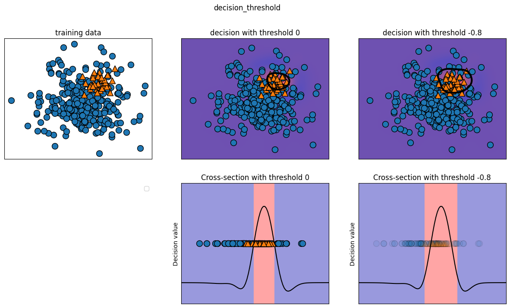
Podemos utilizar la función
classification_reportpara evaluarprecisionyrecallde ambas clases
print(classification_report(y_test, svc.predict(X_test)))
precision recall f1-score support
0 0.49 1.00 0.66 49
1 0.00 0.00 0.00 51
accuracy 0.49 100
macro avg 0.24 0.50 0.33 100
weighted avg 0.24 0.49 0.32 100
print(confusion_matrix(y_test, svc.predict(X_test)))
[[49 0]
[51 0]]
Se obtienen las puntuaciones de decisión para medir la certeza del modelo, luego se calcula un umbral óptimo como la media de estas puntuaciones. A partir de este umbral, se generan predicciones ajustadas, considerando como positivos los valores superiores.
La función
decision_function(X_test)de un clasificador SVM (SVC) devuelve un arreglo de valores numéricos que representan la distancia de cada muestra con respecto al hiperplano de decisión.
import numpy as np
decision_scores = svc.decision_function(X_test)
optimal_threshold = np.median(decision_scores)
print("Umbral óptimo:", optimal_threshold)
Umbral óptimo: -0.013244755286005602
y_pred_adjusted = decision_scores > optimal_threshold
print(classification_report(y_test, y_pred_adjusted))
precision recall f1-score support
0 0.98 1.00 0.99 49
1 1.00 0.98 0.99 51
accuracy 0.99 100
macro avg 0.99 0.99 0.99 100
weighted avg 0.99 0.99 0.99 100
print(confusion_matrix(y_test, y_pred_adjusted))
[[49 0]
[ 1 50]]
Como se esperaba, recall y precision para la clase 1 subió. Ahora estamos clasificando una región más grande del espacio como clase 1, como se ilustra en el panel superior derecho de la anterior figura. Si valora más
precisionquerecall, o al revés, o sus datos están muy desequilibrados, cambiar el umbral de decisión es la forma más fácil de obtener mejores resultados. Como la función de decisión puede tener rangos arbitrarios, es difícil proporcionar una regla general sobre cómo elegir un umbral.
Observación
Si establece un umbral, debe tener cuidado de no hacerlo utilizando el conjunto de prueba. Como con cualquier otro parámetro, establecer un umbral de decisión en el conjunto de prueba es probable que produzca resultados demasiado optimistas. Utilice un conjunto de validación o aplique validación cruzada.
La media geométrica o G-mean es una métrica de clasificación desequilibrada que, si se optimiza, buscará un equilibrio entre la precision y recall.
Un enfoque consistiría en probar el modelo con cada umbral devuelto por la llamada
precision_recall_curve()y seleccionar el umbral con el mayor valor G-mean. Otras técnicas de oversampling, tales comoSMOTEtambién pueden ser adecuadas, para datos de entrenamiento desbalanceados.
El umbral en modelos con
predict_probaes más fácil de ajustar, ya que su salida va de 0 a 1. Por defecto, un umbral de 0.5 clasifica como positiva una instancia si la probabilidad supera el 50%. Aumentarlo exige mayor certeza para predecir positivo y menor para negativo.Trabajar con probabilidades es intuitivo, pero no todos los modelos reflejan bien la incertidumbre (ej., un
DecisionTreeprofundo siempre está 100% seguro, aunque se equivoque). Esto se relaciona con la calibración: un modelo calibrado mide correctamente su incertidumbre. Para más detalles, consulte “Predicting Good Probabilities with Supervised Learning” de Niculescu-Mizil y Caruana.
9.4. Curvas precision-recall y ROC#
Ajustar el umbral de clasificación permite equilibrar
precisionyrecall. Por ejemplo, para unrecalldel 90%, el umbral debe adaptarse según los objetivos empresariales. Sin embargo, un umbral extremo, como clasificar todo como positivo, garantiza unrecalldel 100% pero hace inútil el modelo.Fijar un punto operativo, como un
recalldel 90%, ayuda a garantizar el rendimiento en entornos empresariales. Al desarrollar un modelo, es clave explorar distintos umbrales y compromisosprecision-recallpara comprender mejor el problema.La herramienta clave para esto es la curva precision-recall, calculable con
precision_recall_curve()desklearn.metrics, que usa etiquetas reales e incertidumbres dedecision_functionopredict_proba.
from sklearn.metrics import precision_recall_curve
precision, recall, thresholds = precision_recall_curve(y_test, svc.decision_function(X_test))
La función
precision_recall_curvedevuelve listas de precisión y recall para todos los umbrales posibles, permitiendo trazar la curva correspondiente. Más puntos generan una curva más suave.make_blobscrea datos gaussianos isotrópicos para agrupación.
X, y = make_blobs(n_samples=4000, n_features=500, centers=2, cluster_std=[7.0, 2], random_state=22)
También usaremos el conjunto de cáncer de mama con
load_breast_cancer.
from sklearn.tree import DecisionTreeClassifier
from sklearn.datasets import load_breast_cancer
from sklearn.model_selection import train_test_split
from sklearn.svm import SVC
from sklearn.metrics import precision_recall_curve
import numpy as np
import matplotlib.pyplot as plt
cancer = load_breast_cancer()
X_train, X_test, y_train, y_test = train_test_split(cancer.data, cancer.target, stratify=cancer.target, random_state=42)
svc = SVC(gamma=.05).fit(X_train, y_train)
precision, recall, thresholds = precision_recall_curve(y_test, svc.decision_function(X_test))
closest_eq_idx = np.argmin(np.abs(precision - recall))
best_threshold = thresholds[closest_eq_idx]
best_precision = precision[closest_eq_idx]
best_recall = recall[closest_eq_idx]
best_threshold, best_precision, best_recall
(0.39103354055345696, 0.9529411764705882, 0.9)
close_zero = np.argmin(np.abs(thresholds))
plt.figure(figsize=(8, 6))
plt.plot(precision, recall, label="Precision-Recall Curve")
plt.plot(precision[closest_eq_idx], recall[closest_eq_idx], 'o', markersize=10,
label=f"Best Threshold ({best_threshold:.2f})", fillstyle="none", c='r', mew=2)
plt.plot(precision[close_zero], recall[close_zero], 'o', markersize=10,
label="Threshold ~ 0", fillstyle="none", c='k', mew=2)
plt.xlabel("Precision")
plt.ylabel("Recall")
plt.legend()
plt.title("Precision-Recall Curve with Best Threshold and Threshold ~ 0")
plt.show()
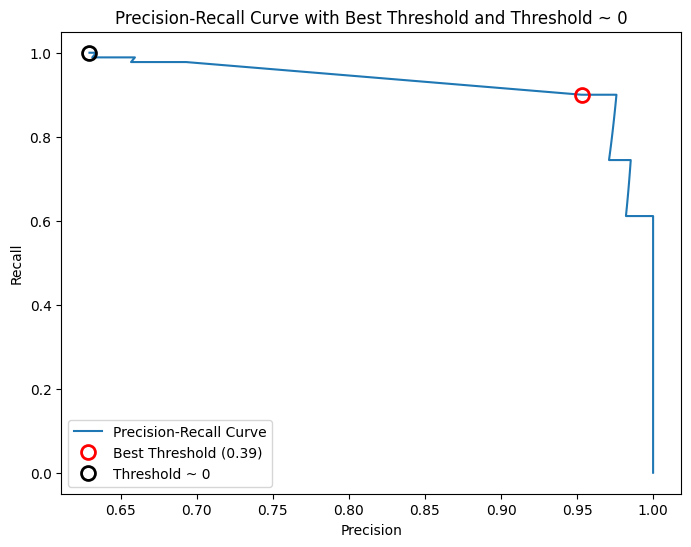
Cada punto de la curva representa un umbral de
decision_function. Se puede lograr un recall de 0.99 con una precisión de 0.63. El círculo negro indica el umbral 0, que es el predeterminado dedecision_function, mostrando la compensación usada enpredict. Cuanto más cerca de la esquina superior derecha esté la curva, mejor es el clasificador, pues indica altoprecisionyrecallsimultáneamente.La curva inicia en la esquina superior izquierda con un umbral bajo, clasificando todo como positivo. A medida que el umbral aumenta, la precisión mejora, pero el
recalldisminuye. Si el umbral es muy alto, solo los verdaderos positivos son clasificados correctamente, lo que maximizaprecisionpero reducerecall. Paraprecisionmayor a 0.5, cada mejora en precisión cuesta una gran pérdida enrecall.Diferentes clasificadores rinden mejor en distintas partes de la curva. Comparando un
SVMcon unRandomForestClassifier, este último usapredict_probaen lugar dedecision_function. La funciónprecision_recall_curverequiere una medida de certeza, por lo que se usarf.predict_proba(X_test)[:, 1]. El umbral predeterminado depredict_probaes 0.5 y está marcado en la curva.
import numpy as np
import matplotlib.pyplot as plt
from sklearn.svm import SVC
from sklearn.ensemble import RandomForestClassifier
from sklearn.datasets import load_breast_cancer
from sklearn.model_selection import train_test_split
from sklearn.metrics import precision_recall_curve
cancer = load_breast_cancer()
X_train, X_test, y_train, y_test = train_test_split(cancer.data, cancer.target, random_state=42)
svc = SVC(gamma=0.05, probability=True).fit(X_train, y_train)
rf = RandomForestClassifier(n_estimators=100, random_state=0, max_features=2).fit(X_train, y_train)
y_scores_svc = svc.predict_proba(X_test)[:, 1]
precision_svc, recall_svc, thresholds_svc = precision_recall_curve(y_test, y_scores_svc)
y_scores_rf = rf.predict_proba(X_test)[:, 1]
precision_rf, recall_rf, thresholds_rf = precision_recall_curve(y_test, y_scores_rf)
closest_eq_idx_svc = np.argmin(np.abs(precision_svc - recall_svc))
best_threshold_svc = thresholds_svc[closest_eq_idx_svc]
close_zero_svc = np.argmin(np.abs(thresholds_svc))
closest_eq_idx_rf = np.argmin(np.abs(precision_rf - recall_rf))
best_threshold_rf = thresholds_rf[closest_eq_idx_rf]
close_default_rf = np.argmin(np.abs(thresholds_rf - 0.5))
plt.figure(figsize=(8, 6))
plt.plot(precision_svc, recall_svc, label="SVC Precision-Recall Curve")
plt.plot(precision_rf, recall_rf, label="RandomForest Precision-Recall Curve")
plt.plot(precision_svc[closest_eq_idx_svc], recall_svc[closest_eq_idx_svc], 'o',
markersize=10, label=f"Best Threshold SVC ({best_threshold_svc:.2f})",
fillstyle="none", c='r', mew=2)
plt.plot(precision_svc[close_zero_svc], recall_svc[close_zero_svc], 'o',
markersize=10, label="Threshold ~ 0 (SVC)", fillstyle="none", c='k', mew=2)
plt.plot(precision_rf[closest_eq_idx_rf], recall_rf[closest_eq_idx_rf], '^',
markersize=10, label=f"Best Threshold RF ({best_threshold_rf:.2f})",
fillstyle="none", c='g', mew=2)
plt.plot(precision_rf[close_default_rf], recall_rf[close_default_rf], '^',
markersize=10, label="Threshold 0.5 (RF)", fillstyle="none", c='b', mew=2)
plt.xlabel("Precision")
plt.ylabel("Recall")
plt.legend()
plt.title("Precision-Recall Curve for SVC and RandomForest")
plt.show()
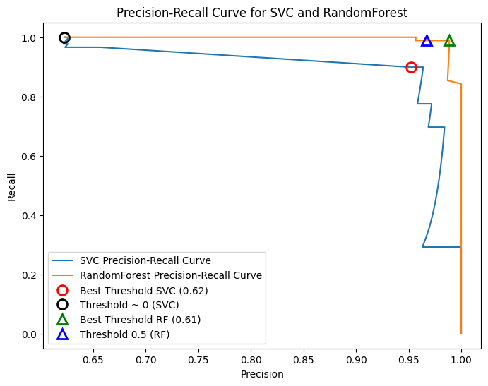
En el gráfico de comparación podemos ver que el bosque aleatorio funciona mejor en los extremos, para requisitos de
recallo deprecisionmuy altos. Alrededor de cualquier nivel de precision,RFtiene un mejor rendimiento. Si sólo nos fijamos en el \(f_{1}\)-score para comparar el rendimiento general, habríamos pasado por alto estas sutilezas. El \(f_{1}\)-score sólo capta un punto de la curva precision-recall, el dado por el umbral por defecto.
print("f1_score of random forest: {:.3f}".format(f1_score(y_test, rf.predict(X_test))))
print("f1_score of svc: {:.3f}".format(f1_score(y_test, svc.predict(X_test))))
f1_score of random forest: 0.978
f1_score of svc: 0.767
La comparación de dos curvas precision-recall proporciona una visión muy detallada, pero es un proceso bastante manual. Para la comparación automática de modelos, es posible que queramos resumir la información contenida en la curva, sin limitarnos a un umbral o punto de operación. Una forma concreta de resumir la curva precisión-recall es
calcular la integral o el área bajo la curva precision-recall, también conocida como precisión media. Para calcular la precisión media se puede utilizar la funciónaverage_precision_score. Como tenemos que calcular la curva ROC y considerar múltiples umbrales, el resultado dedecision_functionopredict_probadebe pasarse aaverage_precision_score, no el resultado depredict.
from sklearn.metrics import average_precision_score
ap_rf = average_precision_score(y_test, rf.predict_proba(X_test)[:, 1])
ap_svc = average_precision_score(y_test, svc.decision_function(X_test))
print("Average precision of random forest: {:.3f}".format(ap_rf))
print("Average precision of svc: {:.3f}".format(ap_svc))
Average precision of random forest: 0.998
Average precision of svc: 0.948
Al promediar todos los umbrales posibles, vemos que el bosque aleatorio y el SVC tienen un rendimiento similar, con
RFligeramente por delante. Esto es bastante diferente del resultado que obtuvimos antes con \(f_{1}\)-score. Como la precisión media es el área área bajo una curva que va de 0 a 1, la precisión media siempre devuelve un valor entre 0 (worst) y 1 (best). La precisión media de un clasificador que asignadecision_functional azar es la fracción de muestras positivas en el conjunto de datos.
9.4.1. Características operativas del receptor (ROC) y AUC#
La curva ROC analiza el rendimiento de los clasificadores a distintos umbrales, graficando la tasa de verdaderos positivos (TPR) frente a la tasa de falsos positivos (FPR). Mientras que TPR equivale al
recall, FPR mide la fracción de negativos reales clasificados incorrectamente. A diferencia de la curvaprecision-recall, la curva ROC evalúa el equilibrio entre la detección de positivos y la generación de falsos positivos.
Nótese que \(FPR\) se utiliza como métrica de rendimiento cuando el objetivo es limitar el número de verdaderos negativos. La curva ROC puede calcularse mediante la función
roc_curve. Nótese que si \(FPR\rightarrow 0\) entonces el número de \(TN\) crece.
from sklearn.metrics import roc_curve
fpr, tpr, thresholds = roc_curve(y_test, svc.decision_function(X_test))
plt.plot(fpr, tpr, label="ROC Curve")
plt.xlabel("FPR")
plt.ylabel("TPR (recall)")
close_zero = np.argmin(np.abs(thresholds))
plt.plot(fpr[close_zero], tpr[close_zero], 'o', markersize=10, label="threshold zero", fillstyle="none", c='k', mew=2)
plt.legend(loc=4);
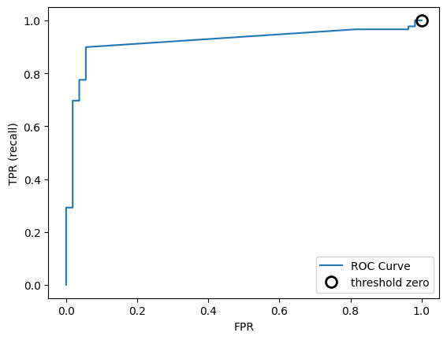
Nótese que, los valores más pequeños en el eje \(x\) indican menos falsos positivos (FP) y más verdaderos negativos (TN). Los valores más grandes en el eje \(y\) indican más verdaderos positivos (TP) y menos falsos negativos (FN). En cuanto a la curva
precision-recall, a menudo queremos resumir la curva ROC utilizando un solo número, el área bajo la curva (comúnmente se denomina simplemente AUC, y se entiende que la curva en cuestión es la curva ROC). Podemos calcular el área bajo la curvaROCcon la funciónroc_auc_score
from sklearn.metrics import roc_auc_score
rf_auc = roc_auc_score(y_test, rf.predict_proba(X_test)[:, 1])
svc_auc = roc_auc_score(y_test, svc.decision_function(X_test))
print("AUC for Random Forest: {:.3f}".format(rf_auc))
print("AUC for SVC: {:.3f}".format(svc_auc))
AUC for Random Forest: 0.997
AUC for SVC: 0.921
from sklearn.metrics import roc_curve
fpr_rf, tpr_rf, thresholds_rf = roc_curve(y_test, rf.predict_proba(X_test)[:, 1])
plt.plot(fpr, tpr, label="ROC Curve SVC")
plt.plot(fpr_rf, tpr_rf, label="ROC Curve RF")
plt.xlabel("FPR")
plt.ylabel("TPR (recall)")
plt.plot(fpr[close_zero], tpr[close_zero], 'o', markersize=10, label="threshold zero SVC", fillstyle="none", c='k', mew=2)
close_default_rf = np.argmin(np.abs(thresholds_rf - 0.5))
plt.plot(fpr_rf[close_default_rf], tpr_rf[close_default_rf], '^', markersize=10, label="threshold 0.5 RF", fillstyle="none", c='k', mew=2)
plt.legend(loc=4);
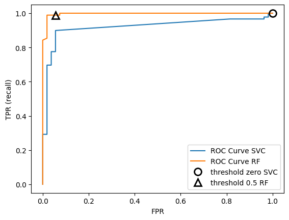
El bosque aleatorio supera ligeramente a la SVM en AUC-score. La precisión media, representada por el área bajo la curva (AUC), varía entre 0 (peor) y 1 (mejor). Una predicción aleatoria siempre tiene un AUC de 0.5, sin importar el desequilibrio de clases, lo que hace que AUC sea una mejor métrica que el accuracy en estos casos.
El AUC mide qué tan bien el modelo clasifica muestras positivas en comparación con negativas. Un AUC de 1 indica que todas las muestras positivas tienen un puntaje mayor que las negativas. En problemas con clases desequilibradas, el AUC es más útil que el accuracy para la selección del modelo. Por ejemplo, al clasificar el dígito 9 frente a otros en un conjunto de datos, podemos evaluar el rendimiento de una SVM con diferentes valores de
gamma.
plt.figure()
for gamma in [1, 0.07, 0.01]:
svc = SVC(gamma=gamma).fit(X_train, y_train)
accuracy = svc.score(X_test, y_test)
auc = roc_auc_score(y_test, svc.decision_function(X_test))
fpr, tpr, _ = roc_curve(y_test , svc.decision_function(X_test))
print("gamma = {:.2f} accuracy = {:.2f} AUC = {:.2f}".format(gamma, accuracy, auc))
plt.plot(fpr, tpr, label="gamma={:.3f}".format(gamma))
plt.xlabel("FPR")
plt.ylabel("TPR")
plt.xlim(-0.01, 1)
plt.ylim(0, 1.02)
plt.legend(loc="best");
gamma = 1.00 accuracy = 0.62 AUC = 0.53
gamma = 0.07 accuracy = 0.62 AUC = 0.91
gamma = 0.01 accuracy = 0.63 AUC = 0.93
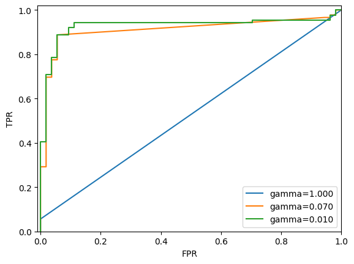
Los valores de
accuracyparagammade1.0, 0.07y0.01son0.51, 0.94y0.95, respectivamente. Congamma=1.0, el AUC es aleatorio, mientras que congamma=0.07mejora a0.94, y congamma=0.01, alcanza0.95, indicando que los positivos están mejor clasificados que los negativos. Con un umbral adecuado, el modelo puede clasificar perfectamente.Usar solo
accuracyno revela esto, por lo que recomendamos elAUC, especialmente en datos desequilibrados. Sin embargo, dado queAUCno usa un umbral fijo, puede ser necesario ajustarlo para mejorar la clasificación.
9.5. Métricas para la clasificación multiclase#
La evaluación de la clasificación multiclase se basa en métricas de clasificación binaria, pero promediadas en todas las clases. El
accuracysigue siendo la fracción de ejemplos clasificados correctamente, pero no es ideal cuando las clases están desequilibradas.Por ejemplo, en un problema con tres clases (A: 85%, B: 10%, C: 5%), un
accuracydel 85% puede ser engañoso. La clasificación multiclase es más difícil de interpretar que la binaria, por lo que, además delaccuracy, se utilizan la matriz de confusión y el informe de clasificación. Aplicaremos estos métodos al reconocimiento de dígitos escritos a mano en el conjunto de datosdigits.
from sklearn.metrics import accuracy_score
X_train, X_test, y_train, y_test = train_test_split(digits.data, digits.target, random_state=0)
lr = LogisticRegression().fit(X_train, y_train)
pred = lr.predict(X_test)
print("Accuracy: {:.3f}".format(accuracy_score(y_test, pred)))
print("Confusion matrix:\n{}".format(confusion_matrix(y_test, pred)))
Accuracy: 0.951
Confusion matrix:
[[37 0 0 0 0 0 0 0 0 0]
[ 0 40 0 0 0 0 0 0 2 1]
[ 0 1 40 3 0 0 0 0 0 0]
[ 0 0 0 43 0 0 0 0 1 1]
[ 0 0 0 0 37 0 0 1 0 0]
[ 0 0 0 0 0 46 0 0 0 2]
[ 0 1 0 0 0 0 51 0 0 0]
[ 0 0 0 1 1 0 0 46 0 0]
[ 0 3 1 0 0 0 0 0 43 1]
[ 0 0 0 0 0 1 0 0 1 45]]
El modelo tiene un accuracy del 95.1%, lo que ya nos dice que lo estamos haciendo bastante bien. La matriz de confusión nos proporciona algunos detalles más. Como en el caso binario, cada fila corresponde a una etiqueta verdadera y cada columna a una etiqueta predicha. En la siguiente figura se puede encontrar una mejor representación visual
import numpy as np
import matplotlib.pyplot as plt
import seaborn as sns
from sklearn.metrics import confusion_matrix
conf_matrix = confusion_matrix(y_test, pred).astype(int)
plt.figure(figsize=(8, 6))
sns.heatmap(conf_matrix, annot=True, fmt="d", cmap="gray_r",
xticklabels=digits.target_names,
yticklabels=digits.target_names)
plt.xlabel("Etiqueta Predicha")
plt.ylabel("Etiqueta Real")
plt.title("Matriz de Confusión")
plt.show()
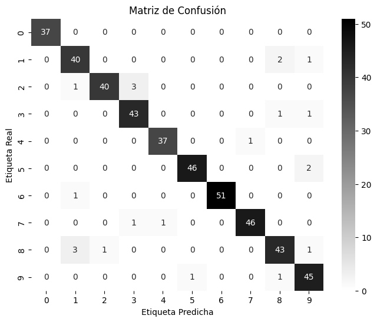
Para el dígito 0, las 37 muestras fueron clasificadas correctamente, sin falsos negativos ni falsos positivos. Sin embargo, hubo confusiones entre otros dígitos, como el 2, que se clasificó erróneamente como 3 en tres casos y como 1 en uno. También un dígito 8 se clasificó como 2. La función
classification_reportpermite calcularprecision,recally \(f\)-score para cada clase.
print(classification_report(y_test, pred))
precision recall f1-score support
0 1.00 1.00 1.00 37
1 0.89 0.93 0.91 43
2 0.98 0.91 0.94 44
3 0.91 0.96 0.93 45
4 0.97 0.97 0.97 38
5 0.98 0.96 0.97 48
6 1.00 0.98 0.99 52
7 0.98 0.96 0.97 48
8 0.91 0.90 0.91 48
9 0.90 0.96 0.93 47
accuracy 0.95 450
macro avg 0.95 0.95 0.95 450
weighted avg 0.95 0.95 0.95 450
No es de extrañar que los valores para
precisionyrecallsean un 1 perfecto para la clase 0, ya que no hay confusiones con esta clase. Para la clase 6, en cambio, elprecisiones de 1 porque ninguna otra clase se clasificó erróneamente como 6. La métrica más utilizada para conjuntos de datos desequilibrados en el entorno multiclase es la versión multiclase del \(f\)-score.La idea detrás del \(f\)-score multiclase es calcular un \(f\)-score binario por clase, siendo esa clase la positiva y las otras clases las negativas. Luego, estos \(f\)-scores por clase se promedian utilizando una de las siguientes estrategias:
El promedio “macro” calcula los \(f\)-scores no ponderadas por clase. De este modo, se da el mismo peso a todas las clases, independientemente de su tamaño.
El promedio “weighted” calcula la media de los \(f\)-scores por clase, ponderada por su soporte. Esto es lo que se indica en el informe de clasificación.
El promedio “micro” calcula el número total de falsos positivos, falsos negativos y verdaderos positivos en todas las clases, y luego calcula
precision, recally \(f\)-scoreutilizando estos recuentos.
Si se preocupa por igual de cada muestra, se recomienda utilizar el “micro” \(f\)-score; si le importa cada clase por igual, se recomienda utilizar la media macro \(f\)-score.
print("Macro average f1 score: {:.3f}".format(f1_score(y_test, pred, average="macro")))
print("Weighted average f1 score: {:.3f}".format(f1_score(y_test, pred, average="weighted")))
print("Micro average f1 score: {:.3f}".format(f1_score(y_test, pred, average="micro")))
Macro average f1 score: 0.952
Weighted average f1 score: 0.951
Micro average f1 score: 0.951
9.6. Métricas de regresión#
La evaluación en regresión puede ser tan detallada como en clasificación, analizando sobrepredicción y subpredicción. Sin embargo, en la mayoría de los casos, el \(R^2\) usado por defecto en los regresores es suficiente. En aplicaciones empresariales, métricas como MSE o MAE pueden influir en la optimización de modelos. No obstante, \(R^2\) suele ser más intuitivo. En el curso de Time Series Forecasting, se profundizará en métricas como MAE, MAPE, MSE y RMSE.
9.6.1. Uso de métricas de evaluación en la selección de modelos#
Para evaluar modelos con métricas como AUC en
GridSearchCVocross_val_score,scikit-learnpermite usar el argumentoscoring. Basta con proporcionar una cadena con la métrica deseada, como"roc_auc", para cambiar la evaluación predeterminada (accuracy) a AUC. Esto facilita la selección de modelos en tareas como clasificar “nueve vs. resto” endigits.
Scoring por defecto para la clasificación es
accuracy
print("Default scoring: {}".format(cross_val_score(SVC(), digits.data, digits.target == 9)))
Default scoring: [0.975 0.99166667 1. 0.99442897 0.98050139]
Proporcionar
scoring="accuracy"no cambia los resultados
explicit_accuracy = cross_val_score(SVC(), digits.data, digits.target == 9, scoring="accuracy")
print("Explicit accuracy scoring: {}".format(explicit_accuracy))
Explicit accuracy scoring: [0.975 0.99166667 1. 0.99442897 0.98050139]
Ahora asignemos
scoring="roc_auc"para modificar la técnica descoringutilizada
roc_auc = cross_val_score(SVC(), digits.data, digits.target == 9, scoring="roc_auc")
print("AUC scoring: {}".format(roc_auc))
AUC scoring: [0.99717078 0.99854252 1. 0.999828 0.98400413]
Del mismo modo, podemos cambiar la métrica utilizada para elegir los mejores parámetros en
GridSearchCV
X_train, X_test, y_train, y_test = train_test_split(digits.data, digits.target == 9, random_state=0)
Proporcionamos una red a manera de ilustración del punto
param_grid = {'gamma': [0.0001, 0.01, 0.1, 1, 10]}
Utilizando el score
accuracypor defecto
grid = GridSearchCV(SVC(), param_grid=param_grid)
grid.fit(X_train, y_train)
print("Grid-Search with accuracy")
print("Best parameters:", grid.best_params_)
print("Best cross-validation score (accuracy)): {:.3f}".format(grid.best_score_))
print("Test set AUC: {:.3f}".format(
roc_auc_score(y_test, grid.decision_function(X_test))))
print("Test set accuracy: {:.3f}".format(grid.score(X_test, y_test)))
Grid-Search with accuracy
Best parameters: {'gamma': 0.0001}
Best cross-validation score (accuracy)): 0.976
Test set AUC: 0.992
Test set accuracy: 0.973
Utilizando el scoring AUC en su lugar
grid = GridSearchCV(SVC(), param_grid=param_grid, scoring="roc_auc")
grid.fit(X_train, y_train)
print("\nGrid-Search with AUC")
print("Best parameters:", grid.best_params_)
print("Best cross-validation score (AUC): {:.3f}".format(grid.best_score_))
print("Test set AUC: {:.3f}".format(
roc_auc_score(y_test, grid.decision_function(X_test))))
print("Test set accuracy: {:.3f}".format(grid.score(X_test, y_test)))
Grid-Search with AUC
Best parameters: {'gamma': 0.01}
Best cross-validation score (AUC): 0.998
Test set AUC: 1.000
Test set accuracy: 1.000
Cuando se utiliza
accuracy, se selecciona el parámetrogamma=0.0001, mientras que cuando se utiliza el AUC se seleccionagamma=0.01. Accuracy score para la validación cruzada es coherente con elaccuracydel conjunto de prueba en ambos casos. Sin embargo, al utilizar AUC se encontró un mejor ajuste de los parámetros en en términos de AUC e incluso en términos de accuracy. Los valores más importantes del parámetro de scoring para la clasificación sonaccuracy(por defecto);roc_aucpara el área bajo la curva ROC;average_precisionpara el área bajo la curva deprecision-recall;f1, f1_macro, f1_microyf1_weightedpara \(f_{1}\)-score binario y las diferentes variantes ponderadas.En cuanto a la regresión, los valores más utilizados son
r2para el score \(R^{2}\),mean_squared_errorpara el error medio al cuadrado ymean_absolute_errorpara el error medio absoluto. Puede encontrar una lista completa de argumentos admitidos en la documentación o consultando el diccionario SCORER definido en el módulometrics.scorer.
Observación
El modelo SVC() resultante no cambia automáticamente su threshold al que entrega el mejor trade-off entre precision y recall o entre TPR y FPR (como podría sugerir el AUC).
Lo que SÍ hace
GridSearchCVconscoring="roc_auc":
Durante la validación cruzada, el modelo se evalúa usando el área bajo la curva ROC (AUC), lo cual es umbral-independiente: AUC mide la capacidad del modelo para separar clases en todo el rango de posibles thresholds.
Escoge los hiperparámetros que producen el mejor AUC promedio en validación cruzada.
Lo que NO hace automáticamente:
No ajusta el umbral de decisión final. El modelo sigue usando el umbral predeterminado de 0 para
decision_function(X)o 0.5 parapredict_proba(X)(cuando el clasificador lo permite).Para
SVC(),predict()funciona como:y_pred = (decision_function(X) > 0).astype(int)
Y ese umbral no se adapta al mejor trade-off entre precisión y recall.
Resumen y conclusiones
La validación cruzada, el grid-search y las métricas de evaluación son fundamentales para mejorar los modelos de aprendizaje automático. Hay dos puntos clave a considerar:
Validación cruzada: Permite evaluar un modelo como se comportaría en el futuro. Sin embargo, si se usa para seleccionar modelos o hiperparámetros, los datos de prueba quedan “agotados”, lo que lleva a estimaciones optimistas. Para evitarlo, se deben separar los datos en entrenamiento, validación y prueba, usando validación cruzada en el conjunto de entrenamiento para la selección de modelos y parámetros.
Métrica de evaluación:
precisionno siempre es el mejor criterio, especialmente en problemas con clases desbalanceadas, donde los falsos positivos y negativos tienen impactos diferentes. Es crucial elegir una métrica adecuada según el contexto.
Las herramientas descritas son esenciales para cualquier científico de datos. Sin embargo, grid-search y validación cruzada solo aplican a modelos supervisados individuales. En la siguiente sección, se introducirá Pipeline para optimizar procesos más complejos.
Elemento |
¿Necesario? |
Comentario |
|---|---|---|
Python |
Sí |
Versión recomendada: 3.8 a 3.10 |
PySpark instalado ( |
Sí |
Necesario para ejecutar Spark desde Python |
scikit-learn ( |
Sí |
Necesario para cargar el dataset de Iris |
Jupyter, VSCode o IDE |
Recomendado |
Necesario si deseas una interfaz cómoda para desarrollar |
Java JDK (versión requerida por PySpark |
Usualmente necesario |
Spark requiere Java. Asegúrate de tener |
findspark ( |
Opcional |
Útil si usas notebooks y necesitas inicializar Spark manualmente |
MLflow ( |
Opcional |
Solo si planeas hacer tracking de experimentos |
Para instalar Java (ver Java Downloads)
Configurar
JAVA_HOMEpermanentemente. Si prefieres no tener que hacer esto en cada notebook:Abre el Panel de Control → Sistema → Configuración avanzada del sistema.
Clic en “Variables de entorno”.
En “Variables del sistema”, haz clic en “Nueva…” y agrega:
Nombre:
JAVA_HOMEValor:
C:\Program Files\Java\jdk-17.0.20(ajusta según tu versión)
Cierra y vuelve a abrir tu entorno (
Jupyter, Anaconda, etc.).
9.7. ¿Por qué usar PySpark para modelos de Machine Learning con grandes volúmenes de datos?#
A medida que trabajamos con datasets más grandes, las herramientas tradicionales como
scikit-learncomienzan a mostrar ciertas limitaciones. Aunque son excelentes para prototipado rápido y problemas de tamaño moderado, no están diseñadas para escalar eficientemente cuando tratamos con millones de registros.Aquí es donde entra PySpark, la interfaz en Python de
Apache Spark.PySparkpermite:Ejecutar operaciones en paralelo aprovechando múltiples núcleos o incluso múltiples máquinas (clústeres)
Procesar y transformar datos a gran escala con pipelines eficientes
Entrenar modelos de machine learning distribuidos con la API
pyspark.ml
En el siguiente ejemplo consideramos un ejemplo realista donde entrenamos un modelo
SVMsobre un dataset sintético de 10 mil muestras y 50 features. Compararemos dos enfoques:Uno con
GridSearchCVdescikit-learn, ejecutado en un solo equipo usando múltiples hilosOtro con
CrossValidatordePySpark, aprovechando el cómputo distribuido
Ambos producen resultados comparables en calidad (métrica AUC), pero difieren notablemente en tiempo de entrenamiento, demostrando cómo PySpark puede acelerar tareas complejas cuando los datos crecen.
Este tipo de enfoque es crucial cuando trabajas en entornos de big data, o cuando quieres preparar tus modelos para producción sobre volúmenes de datos reales.
import time
import pandas as pd
from sklearn.datasets import make_classification
from sklearn.model_selection import train_test_split, GridSearchCV
from sklearn.svm import SVC
from sklearn.metrics import roc_auc_score
from pyspark.sql import SparkSession
from pyspark.ml.classification import LinearSVC
from pyspark.ml.feature import VectorAssembler
from pyspark.ml.tuning import ParamGridBuilder, CrossValidator
from pyspark.ml.evaluation import BinaryClassificationEvaluator
import os
os.environ["PYSPARK_PYTHON"] = "/usr/bin/python3.10"
os.environ["PYSPARK_DRIVER_PYTHON"] = "/usr/bin/python3.10"
import platform
print("Driver usando Python:", platform.python_version())
print("PYSPARK_PYTHON:", os.environ["PYSPARK_PYTHON"])
Driver usando Python: 3.10.12
PYSPARK_PYTHON: /usr/bin/python3.10
X, y = make_classification(n_samples=10_000, n_features=50, n_informative=30, n_classes=2, random_state=42)
PySparksolo soportaLinearSVC, sin soporte para kernels no lineales (RBF, poly, sigmoid). Si necesitas kernels no lineales conSpark, puedes usarMLflow + Spark Submit(ejercicio para el estudiante).
# --- PySpark ---
spark = SparkSession.builder \
.appName("WSL Spark Demo") \
.master("local[*]") \
.getOrCreate()
WARNING: Using incubator modules: jdk.incubator.vector
Using Spark's default log4j profile: org/apache/spark/log4j2-defaults.properties
25/08/04 23:28:27 WARN Utils: Your hostname, DESKTOP-14GHD2E, resolves to a loopback address: 127.0.1.1; using 10.255.255.254 instead (on interface lo)
25/08/04 23:28:27 WARN Utils: Set SPARK_LOCAL_IP if you need to bind to another address
Using Spark's default log4j profile: org/apache/spark/log4j2-defaults.properties
Setting default log level to "WARN".
To adjust logging level use sc.setLogLevel(newLevel). For SparkR, use setLogLevel(newLevel).
25/08/04 23:28:28 WARN NativeCodeLoader: Unable to load native-hadoop library for your platform... using builtin-java classes where applicable
# Convertir a Spark DataFrame
df_pd = pd.DataFrame(X, columns=[f"f{i}" for i in range(X.shape[1])])
df_pd["label"] = y
df_spark = spark.createDataFrame(df_pd)
# VectorAssembler
assembler = VectorAssembler(inputCols=[f"f{i}" for i in range(X.shape[1])], outputCol="features")
df_spark = assembler.transform(df_spark).select("features", "label")
# Split en Spark
train_df, test_df = df_spark.randomSplit([0.8, 0.2], seed=42)
# Modelo y Grid
svm = LinearSVC(labelCol="label", featuresCol="features")
paramGrid = ParamGridBuilder().addGrid(svm.regParam, [1.0 / c for c in [0.1, 1, 10]]).build()
evaluator = BinaryClassificationEvaluator(labelCol="label", metricName="areaUnderROC")
# CrossValidator
cv = CrossValidator(estimator=svm, estimatorParamMaps=paramGrid, evaluator=evaluator, numFolds=3)
# Entrenamiento
start = time.time()
cv_model = cv.fit(train_df)
elapsed_spark = time.time() - start
25/08/04 23:28:31 WARN SparkStringUtils: Truncated the string representation of a plan since it was too large. This behavior can be adjusted by setting 'spark.sql.debug.maxToStringFields'.
25/08/04 23:28:34 WARN InstanceBuilder: Failed to load implementation from:dev.ludovic.netlib.blas.JNIBLAS
# Evaluación
predictions = cv_model.transform(test_df)
auc_spark = evaluator.evaluate(predictions)
best_reg = cv_model.bestModel._java_obj.getRegParam()
best_c = 1.0 / best_reg
# Resultados
print("\n PySpark + CrossValidator")
print("Best C (1/regParam):", best_c)
print("Test AUC: {:.4f}".format(auc_spark))
print("Tiempo: {:.2f} segundos".format(elapsed_spark))
PySpark + CrossValidator
Best C (1/regParam): 10.0
Test AUC: 0.8573
Tiempo: 31.21 segundos
“A continuación, se emplea el clásico
GridSearchCVdesklearn. Es importante destacar queApache Sparkofrece un tiempo de cómputo aproximadamente nueve veces menor.”
X_train, X_test, y_train, y_test = train_test_split(X, y, test_size=0.2, random_state=42)
param_grid = {'C': [0.1, 1, 10]}
svc = SVC(kernel='linear', probability=True)
start = time.time()
grid = GridSearchCV(svc, param_grid=param_grid, scoring='roc_auc', cv=3, n_jobs=-1)
grid.fit(X_train, y_train)
elapsed_sklearn = time.time() - start
y_pred = grid.decision_function(X_test)
auc_sklearn = roc_auc_score(y_test, y_pred)
print("\nGridSearchCV (scikit-learn)")
print("Best C:", grid.best_params_['C'])
print("Test AUC: {:.4f}".format(auc_sklearn))
print("Tiempo: {:.2f} segundos".format(elapsed_sklearn))
GridSearchCV (scikit-learn)
Best C: 0.1
Test AUC: 0.8760
Tiempo: 273.57 segundos
Observación
scikit-learnusa liblinear como backend paraLinearSVC.PySpark(pyspark.ml.classification.LinearSVC) usa un optimizador diferente basado en OWLQN (Orthant-Wise Limited-memory Quasi-Newton).Diferente optimizador → diferentes soluciones, incluso si el parámetro
CoregParames equivalente.
9.8. Diferencias significativas entre modelos#
9.8.1. Test de DeLong para Comparación de AUC#
El Test de DeLong es un procedimiento no paramétrico para comparar estadísticamente el desempeño discriminativo de dos modelos mediante sus áreas bajo la curva ROC (AUCs). Este test se fundamenta en la representación del AUC como una estadística U [Bamber, 1975] y en la teoría de matrices de influencia desarrollada en [DeLong et al., 1988].
El AUC como Estadística U. Sea un conjunto de observaciones positivas y negativas
Positivos: \(S^+ = \{s_1^+, \dots, s_m^+\}\)
Negativos: \(S^- = \{s_1^-, \dots, s_n^-\}\)
El AUC está definido como la probabilidad de ordenación correcta
Su estimador empírico es
\[ \widehat{AUC} = \frac{1}{mn}\sum_{i=1}^m \sum_{j=1}^n \phi(s_i^+, s_j^-) \]donde la función de comparación \(\phi(\cdot)\) sigue el esquema clásico de Mann–Whitney, equivalente a la representación en [Hanley and McNeil, 1982]:
\[\begin{split} \phi(s_i^+, s_j^-) = \begin{cases} 1 & \text{si } s_i^+ > s_j^- \\ 0.5 & \text{si } s_i^+ = s_j^- \\ 0 & \text{si } s_i^+ < s_j^- \end{cases} \end{split}\]Este estimador corresponde a una estadística U de orden (1,1) cuya normalidad asintótica está garantizada por la teoría clásica de Hoeffding [Hoeffding, 1948].
Matrices de Influencia: Base del Test de DeLong. El método de [DeLong et al., 1988] evita el uso de bootstrapping al estimar la varianza mediante matrices de influencia. Para cada observación positiva y negativa se definen
Las varianzas asociadas a positivos y negativos son
La varianza total del estimador AUC es
Comparación de Dos Clasificadores Correlacionados. Sea \(k \in \{1,2\}\) para los dos modelos evaluados, como en el desarrollo original de [DeLong et al., 1988]. Cada modelo produce vectores
La covarianza entre ambos AUCs se estima como:
\[ \widehat{Cov}(\widehat{AUC}_1, \widehat{AUC}_2) = \frac{\widehat{Cov}_{+,12}}{m} + \frac{\widehat{Cov}_{-,12}}{n} \]donde
\[ \widehat{Cov}_{+,12} = \frac{1}{m-1} \sum_{i=1}^m (V_{i,1}-\bar V_1)(V_{i,2}-\bar V_2) \]\[ \widehat{Cov}_{-,12} = \frac{1}{n-1} \sum_{j=1}^n (W_{j,1}-\bar W_1)(W_{j,2}-\bar W_2) \]
Estadístico del Test de DeLong. El estadístico de prueba es
La hipótesis nula es
Bajo \(H_0\), se cumple la aproximación
\[ Z \sim N(0,1) \]coherente con los resultados derivados en [DeLong et al., 1988].
Magnitud Práctica de las Diferencias de AUC. Sea la diferencia observada
Comparación General de Modelos: ΔAUC, Significancia y Magnitud. Esta tabla resume la forma de reportar diferencias entre AUCs de varios modelos, considerando magnitud del efecto y significancia estadística [DeLong et al., 1988] [Hanley and McNeil, 1982].
Modelo 1 |
Modelo 2 |
ΔAUC |
Magnitud ΔAUC |
p-value (DeLong) |
Significancia |
Interpretación final |
|---|---|---|---|---|---|---|
Modelo A |
Modelo B |
ΔAB |
Pequeña/Moderada/Importante |
pAB |
Sí/No |
Interpretación combinada de Δ y p |
Modelo A |
Modelo C |
ΔAC |
Pequeña/Moderada/Importante |
pAC |
Sí/No |
Interpretación combinada de Δ y p |
Modelo B |
Modelo C |
ΔBC |
Pequeña/Moderada/Importante |
pBC |
Sí/No |
Interpretación combinada de Δ y p |
… |
… |
… |
… |
… |
… |
… |
Leyenda y guía de interpretación
ΔAUC: Diferencia numérica entre AUCs
\(< 0.01\): trivial
0.01–0.03: pequeña
0.03–0.05: moderada
\(> 0.05\): importante
Significancia estadística (p-value de DeLong):
\(p < 0.05\) → Sí (diferencia significativa)
\(p ≥ 0.05\) → No (no significativa)
Interpretación final: combinación de magnitud y significancia.
Δ grande + \(p < 0.05\) → Diferencia significativa y relevante
Δ grande + \(p ≥ 0.05\) → Diferencia aparente, no estadísticamente significativa
Δ pequeña + \(p < 0.05\) → Diferencia significativa pero de bajo impacto
Δ pequeña + \(p ≥ 0.05\) → Diferencia trivial y no significativa
9.8.2. Ejemplo de aplicación: Clasificación#
import numpy as np
import pandas as pd
import matplotlib.pyplot as plt
import seaborn as sns
from scipy import stats
from sklearn.model_selection import train_test_split
from sklearn.compose import ColumnTransformer
from sklearn.preprocessing import OneHotEncoder, StandardScaler
from sklearn.pipeline import Pipeline
from sklearn.metrics import (
roc_auc_score, accuracy_score, precision_score,
recall_score, f1_score, confusion_matrix, roc_curve
)
from sklearn.svm import SVC
from sklearn.neighbors import KNeighborsClassifier
from sklearn.neural_network import MLPClassifier
from xgboost import XGBClassifier
from sklearn.dummy import DummyClassifier
from sklearn.linear_model import LogisticRegression
import warnings
warnings.filterwarnings('ignore')
# 1. Dataset Titanic
print("Cargando y preparando datos...")
df = sns.load_dataset("titanic")
features_num = ["age", "fare", "sibsp", "parch"]
features_cat = ["pclass", "sex", "embarked", "alone"]
df = df.dropna(subset=features_num + features_cat + ["survived"])
df['alone'] = df['alone'].astype(str)
X = df[features_num + features_cat]
y = df["survived"]
X_train, X_test, y_train, y_test = train_test_split(
X, y, test_size=0.3, random_state=42, stratify=y
)
print(f"Dataset: {X_train.shape[0]} entrenamiento, {X_test.shape[0]} test")
# 2. Preprocesamiento
preprocess = ColumnTransformer(
transformers=[
("num", StandardScaler(), features_num),
("cat", OneHotEncoder(drop="first", sparse_output=False), features_cat)
]
)
# 3. Modelos - INCLUYENDO MODELOS BASE PARA DIFERENCIAS SIGNIFICATIVAS
models = {
"Random_Guess": DummyClassifier(strategy="uniform", random_state=42),
"Majority_Class": DummyClassifier(strategy="most_frequent", random_state=42),
"Logistic_Reg": LogisticRegression(random_state=42, max_iter=1000),
"KNN": KNeighborsClassifier(n_neighbors=5),
"SVM": SVC(probability=True, random_state=42, C=0.1), # SVM débil
"MLP": MLPClassifier(max_iter=1000, random_state=42, hidden_layer_sizes=(50, 25)),
"XGBoost": XGBClassifier(random_state=42, eval_metric="logloss")
}
# 4. Entrenamiento y predicciones
print("Entrenando modelos...")
preds_proba = {}
preds_binary = {}
models_trained = {}
for name, model in models.items():
pipe = Pipeline(steps=[("preprocess", preprocess), ("model", model)])
pipe.fit(X_train, y_train)
models_trained[name] = pipe
preds_proba[name] = pipe.predict_proba(X_test)[:, 1]
preds_binary[name] = pipe.predict(X_test)
# 5. Cálculo de métricas
print("Calculando métricas...")
results = {}
for name in models.keys():
y_pred = preds_binary[name]
y_proba = preds_proba[name]
accuracy = accuracy_score(y_test, y_pred)
precision = precision_score(y_test, y_pred, zero_division=0)
recall = recall_score(y_test, y_pred, zero_division=0)
f1 = f1_score(y_test, y_pred, zero_division=0)
auc = roc_auc_score(y_test, y_proba)
cm = confusion_matrix(y_test, y_pred)
n_bootstraps = 500 # Reducido para mayor velocidad
auc_scores = []
for _ in range(n_bootstraps):
indices = np.random.randint(0, len(y_test), len(y_test))
if len(np.unique(y_test.iloc[indices])) >= 2:
try:
auc_boot = roc_auc_score(y_test.iloc[indices], y_proba[indices])
auc_scores.append(auc_boot)
except:
continue
auc_ci_lower = np.percentile(auc_scores, 2.5) if auc_scores else auc
auc_ci_upper = np.percentile(auc_scores, 97.5) if auc_scores else auc
results[name] = {
'Accuracy': accuracy,
'Precision': precision,
'Recall': recall,
'F1-Score': f1,
'AUC': auc,
'AUC_CI_Lower': auc_ci_lower,
'AUC_CI_Upper': auc_ci_upper,
'Confusion_Matrix': cm
}
# 6. Tabla de resultados - CORREGIDO: crear DataFrame correctamente
print("TABLA DE RESULTADOS:")
# Crear el DataFrame correctamente desde el diccionario results
results_data = []
for model_name, metrics in results.items():
row = {'Modelo': model_name}
row.update(metrics)
results_data.append(row)
results_df = pd.DataFrame(results_data)
results_df = results_df.set_index('Modelo')
# Eliminar columnas que no necesitamos para la tabla principal
columns_to_keep = ['Accuracy', 'Precision', 'Recall', 'F1-Score', 'AUC', 'AUC_CI_Lower', 'AUC_CI_Upper']
results_df = results_df[columns_to_keep]
# Asegurar que sean numéricas
for col in columns_to_keep:
results_df[col] = pd.to_numeric(results_df[col], errors='coerce')
# FUNCIÓN MEJORADA PARA TABLAS ESTÉTICAS SIN EMOJIS
def print_elegant_table(df, title="", format_dict=None):
"""
Imprime DataFrames con formato elegante y profesional
"""
print(f"\n{'-' * 80}")
print(f"{title.upper()}")
print(f"{'-' * 80}")
# Crear copia para no modificar el original
df_display = df.copy()
# Configurar formato por defecto si no se especifica
if format_dict is None:
format_dict = {}
for col in df_display.columns:
if df_display[col].dtype in ['float64', 'float32']:
format_dict[col] = "{:.4f}"
elif df_display[col].dtype in ['int64', 'int32']:
format_dict[col] = "{:d}"
# Aplicar formato
for col, fmt in format_dict.items():
if col in df_display.columns:
try:
if 'float' in str(df_display[col].dtype):
df_display[col] = df_display[col].apply(lambda x: fmt.format(x) if pd.notnull(x) else "N/A")
else:
df_display[col] = df_display[col].apply(lambda x: fmt.format(int(x)) if pd.notnull(x) else "N/A")
except:
pass
# Configuración de visualización
pd.set_option('display.width', 120)
pd.set_option('display.max_columns', None)
pd.set_option('display.max_colwidth', 20)
# Mostrar tabla con formato mejorado
print(df_display.to_string(
justify='center',
formatters=None
))
print(f"{'-' * 80}")
print(f"Total: {len(df)} modelos | Métricas: {len(df.columns)}")
print(f"{'-' * 80}")
# Tabla de resultados principales
print_elegant_table(
results_df.round(4),
"RESULTADOS COMPARATIVOS DE MODELOS - DATASET TITANIC",
format_dict={
'Accuracy': '{:.4f}', 'Precision': '{:.4f}', 'Recall': '{:.4f}',
'F1-Score': '{:.4f}', 'AUC': '{:.4f}', 'AUC_CI_Lower': '{:.4f}', 'AUC_CI_Upper': '{:.4f}'
}
)
# 7. Funciones DeLong (se mantienen igual)
def compute_midrank(x):
J = len(x)
sorted_idx = np.argsort(x)
sorted_x = x[sorted_idx]
ranks = np.zeros(J)
i = 0
while i < J:
j = i
while j < J and sorted_x[j] == sorted_x[i]:
j += 1
rank = 0.5 * (i + j - 1)
ranks[i:j] = rank
i = j
original_ranks = np.empty(J)
original_ranks[sorted_idx] = ranks
return original_ranks
def fast_delong(preds, y_true):
order = np.argsort(-preds)
preds_sorted = preds[order]
y_sorted = y_true[order]
pos_mask = y_sorted == 1
neg_mask = y_sorted == 0
pos_preds = preds_sorted[pos_mask]
neg_preds = preds_sorted[neg_mask]
m = len(pos_preds)
n = len(neg_preds)
if m == 0 or n == 0:
return 0.5, 0.0
auc = 0.0
for pos_score in pos_preds:
auc += np.sum(neg_preds < pos_score)
auc /= (m * n)
V10 = np.array([np.mean(neg_preds < pos_score) for pos_score in pos_preds])
V01 = np.array([np.mean(pos_preds > neg_score) for neg_score in neg_preds])
S10 = np.var(V10, ddof=1) if len(V10) > 1 else 0
S01 = np.var(V01, ddof=1) if len(V01) > 1 else 0
var_auc = S10/m + S01/n
return auc, var_auc
def delong_test(y_true, pred1, pred2):
auc1, var1 = fast_delong(pred1, y_true)
auc2, var2 = fast_delong(pred2, y_true)
diff = auc1 - auc2
se = np.sqrt(var1 + var2)
if se == 0:
return diff, 1.0
z = diff / se
p_value = 2 * (1 - stats.norm.cdf(abs(z)))
return diff, p_value
# 8. Comparación DeLong
model_names = list(preds_proba.keys())
diffs_delong_df = pd.DataFrame(
np.zeros((len(model_names), len(model_names))),
index=model_names, columns=model_names
)
pvals_delong_df = pd.DataFrame(
np.ones((len(model_names), len(model_names))),
index=model_names, columns=model_names
)
print("Realizando comparaciones DeLong...")
for i, m1 in enumerate(model_names):
for j, m2 in enumerate(model_names):
if i >= j:
continue
try:
diff, p = delong_test(y_test.values, preds_proba[m1], preds_proba[m2])
diffs_delong_df.loc[m1, m2] = diff
diffs_delong_df.loc[m2, m1] = -diff
pvals_delong_df.loc[m1, m2] = p
pvals_delong_df.loc[m2, m1] = p
except Exception as e:
continue
# Tabla de diferencias de AUC mejorada
print_elegant_table(
diffs_delong_df.round(4),
"DIFERENCIAS DE AUC ENTRE MODELOS",
format_dict={col: '{:.4f}' for col in diffs_delong_df.columns}
)
# Tabla de p-values mejorada
print_elegant_table(
pvals_delong_df.round(4),
"P-VALUES DELONG - SIGNIFICANCIA ESTADÍSTICA",
format_dict={col: '{:.4f}' for col in pvals_delong_df.columns}
)
# 9. VISUALIZACIONES
print("\n" + "=" * 80)
print("GENERANDO VISUALIZACIONES")
print("=" * 80)
# 9.1 Heatmap p-values DeLong
plt.figure(figsize=(10, 8))
mask = np.triu(np.ones_like(pvals_delong_df, dtype=bool))
sns.heatmap(pvals_delong_df, annot=True, fmt=".3f", cmap="RdYlGn_r",
center=0.05, mask=mask, cbar_kws={'label': 'p-value'})
plt.title('P-values Test DeLong\nComparación de AUC entre modelos', fontsize=14, pad=20)
plt.tight_layout()
plt.show()
# 9.2 Heatmap diferencias de AUC
plt.figure(figsize=(10, 8))
sns.heatmap(diffs_delong_df, annot=True, fmt=".3f", cmap="coolwarm",
center=0, cbar_kws={'label': 'Diferencia de AUC'})
plt.title('Diferencias de AUC entre Modelos\n(Fila - Columna)', fontsize=14, pad=20)
plt.tight_layout()
plt.show()
# 9.3 Curvas ROC
plt.figure(figsize=(10, 8))
colors = plt.cm.Set1(np.linspace(0, 1, len(model_names)))
for idx, (name, color) in enumerate(zip(model_names, colors)):
fpr, tpr, _ = roc_curve(y_test, preds_proba[name])
auc_val = results[name]['AUC']
plt.plot(fpr, tpr, color=color, lw=2,
label=f'{name} (AUC = {auc_val:.3f})')
plt.plot([0,1],[0,1],'k--',lw=2, alpha=0.7, label='Aleatorio (AUC = 0.5)')
plt.xlim([0.0, 1.0])
plt.ylim([0.0, 1.05])
plt.xlabel('Tasa de Falsos Positivos (FPR)')
plt.ylabel('Tasa de Verdaderos Positivos (TPR)')
plt.title('Curvas ROC - Comparación de Modelos', fontsize=14, pad=20)
plt.legend(loc="lower right")
plt.grid(True, alpha=0.3)
plt.tight_layout()
plt.show()
# 10. Tabla final comparativa
final_table = results_df.copy()
final_table['AUC_CI'] = final_table.apply(
lambda x: f"[{x['AUC_CI_Lower']:.3f}, {x['AUC_CI_Upper']:.3f}]", axis=1
)
best_auc_model = final_table['AUC'].idxmax()
final_table['Best_AUC'] = final_table.index == best_auc_model
final_comparison_df = final_table[['Accuracy','Precision','Recall','F1-Score','AUC','AUC_CI','Best_AUC']]
print_elegant_table(
final_comparison_df,
"TABLA COMPARATIVA FINAL - RESUMEN EJECUTIVO",
format_dict={
'Accuracy': '{:.4f}', 'Precision': '{:.4f}', 'Recall': '{:.4f}',
'F1-Score': '{:.4f}', 'AUC': '{:.4f}'
}
)
# 11. Ranking de modelos
print("\n" + "=" * 80)
print("RANKING DE MODELOS")
print("=" * 80)
ranking_data = {}
for name in model_names:
ranking_data[name] = {
'AUC': results[name]['AUC'],
'Accuracy': results[name]['Accuracy'],
'F1-Score': results[name]['F1-Score'],
'Precision': results[name]['Precision'],
'Recall': results[name]['Recall']
}
ranking_df = pd.DataFrame(ranking_data).T
ranking_df['Rank_AUC'] = ranking_df['AUC'].rank(ascending=False)
ranking_df['Rank_Accuracy'] = ranking_df['Accuracy'].rank(ascending=False)
ranking_df['Rank_F1'] = ranking_df['F1-Score'].rank(ascending=False)
ranking_df['Overall_Rank'] = ranking_df[['Rank_AUC', 'Rank_Accuracy', 'Rank_F1']].mean(axis=1)
ranking_sorted = ranking_df.sort_values('Overall_Rank')
print_elegant_table(
ranking_sorted[['AUC', 'Accuracy', 'F1-Score', 'Overall_Rank']].round(4),
"RANKING FINAL DE MODELOS",
format_dict={
'AUC': '{:.4f}', 'Accuracy': '{:.4f}', 'F1-Score': '{:.4f}', 'Overall_Rank': '{:.2f}'
}
)
# 12. Análisis de significancia
print("\n" + "=" * 80)
print("ANÁLISIS DE SIGNIFICANCIA ESTADÍSTICA")
print("=" * 80)
significant_data = []
for i, m1 in enumerate(model_names):
for j, m2 in enumerate(model_names):
if i < j:
p_val = pvals_delong_df.loc[m1, m2]
diff = diffs_delong_df.loc[m1, m2]
significance = ""
if p_val < 0.001:
significance = "***"
elif p_val < 0.01:
significance = "**"
elif p_val < 0.05:
significance = "*"
if significance:
significant_data.append({
'Comparación': f"{m1} vs {m2}",
'Diferencia_AUC': f"{diff:.4f}",
'p_value': f"{p_val:.4f}",
'Significancia': significance
})
significance_df = pd.DataFrame(significant_data)
if not significance_df.empty:
significance_df = significance_df.sort_values('p_value')
print_elegant_table(
significance_df,
"COMPARACIONES ESTADÍSTICAMENTE SIGNIFICATIVAS"
)
else:
print("No hay diferencias estadísticamente significativas entre modelos.")
# 13. Resumen ejecutivo final
print("\n" + "=" * 80)
print("RESUMEN EJECUTIVO FINAL")
print("=" * 80)
print(f"\nMEJOR MODELO: {best_auc_model}")
print(f" AUC: {results[best_auc_model]['AUC']:.4f}")
print(f" Accuracy: {results[best_auc_model]['Accuracy']:.4f}")
print(f" F1-Score: {results[best_auc_model]['F1-Score']:.4f}")
print(f"\nCOMPARACIÓN CON MODELO BASE:")
base_auc = results['Random_Guess']['AUC']
improvement = ((results[best_auc_model]['AUC'] - base_auc) / base_auc) * 100
print(f" Mejora en AUC: {improvement:+.1f}%")
print(f" Diferencia absoluta: {results[best_auc_model]['AUC'] - base_auc:.4f}")
print(f"\nTOTAL DE MODELOS EVALUADOS: {len(models)}")
print(f" Modelos superiores a baseline: {sum(1 for name in model_names if results[name]['AUC'] > 0.7)}")
print(f" Modelos con AUC > 0.8: {sum(1 for name in model_names if results[name]['AUC'] > 0.8)}")
print(f"\n{'=' * 80}")
print("ANÁLISIS COMPLETADO EXITOSAMENTE")
print(f"{'=' * 80}")
Cargando y preparando datos...
Dataset: 498 entrenamiento, 214 test
Entrenando modelos...
Calculando métricas...
TABLA DE RESULTADOS:
--------------------------------------------------------------------------------
RESULTADOS COMPARATIVOS DE MODELOS - DATASET TITANIC
--------------------------------------------------------------------------------
Accuracy Precision Recall F1-Score AUC AUC_CI_Lower AUC_CI_Upper
Modelo
Random_Guess 0.4953 0.4000 0.4828 0.4375 0.5000 0.5000 0.5000
Majority_Class 0.5935 0.0000 0.0000 0.0000 0.5000 0.5000 0.5000
Logistic_Reg 0.8084 0.7738 0.7471 0.7602 0.8448 0.7911 0.8951
KNN 0.7710 0.7159 0.7241 0.7200 0.8337 0.7731 0.8868
SVM 0.7664 0.7606 0.6207 0.6835 0.8262 0.7707 0.8811
MLP 0.7477 0.6897 0.6897 0.6897 0.7890 0.7175 0.8496
XGBoost 0.7570 0.7108 0.6782 0.6941 0.8253 0.7605 0.8795
--------------------------------------------------------------------------------
Total: 7 modelos | Métricas: 7
--------------------------------------------------------------------------------
Realizando comparaciones DeLong...
--------------------------------------------------------------------------------
DIFERENCIAS DE AUC ENTRE MODELOS
--------------------------------------------------------------------------------
Random_Guess Majority_Class Logistic_Reg KNN SVM MLP XGBoost
Random_Guess 0.0000 0.0000 -0.8447 -0.7801 -0.8261 -0.7889 -0.8251
Majority_Class -0.0000 0.0000 -0.8447 -0.7801 -0.8261 -0.7889 -0.8251
Logistic_Reg 0.8447 0.8447 0.0000 0.0646 0.0186 0.0558 0.0195
KNN 0.7801 0.7801 -0.0646 0.0000 -0.0461 -0.0089 -0.0451
SVM 0.8261 0.8261 -0.0186 0.0461 0.0000 0.0372 0.0010
MLP 0.7889 0.7889 -0.0558 0.0089 -0.0372 0.0000 -0.0362
XGBoost 0.8251 0.8251 -0.0195 0.0451 -0.0010 0.0362 0.0000
--------------------------------------------------------------------------------
Total: 7 modelos | Métricas: 7
--------------------------------------------------------------------------------
--------------------------------------------------------------------------------
P-VALUES DELONG - SIGNIFICANCIA ESTADÍSTICA
--------------------------------------------------------------------------------
Random_Guess Majority_Class Logistic_Reg KNN SVM MLP XGBoost
Random_Guess 1.0000 1.0000 0.0000 0.0000 0.0000 0.0000 0.0000
Majority_Class 1.0000 1.0000 0.0000 0.0000 0.0000 0.0000 0.0000
Logistic_Reg 0.0000 0.0000 1.0000 0.1426 0.6490 0.2018 0.6297
KNN 0.0000 0.0000 0.1426 1.0000 0.3072 0.8527 0.3157
SVM 0.0000 0.0000 0.6490 0.3072 1.0000 0.4057 0.9809
MLP 0.0000 0.0000 0.2018 0.8527 0.4057 1.0000 0.4164
XGBoost 0.0000 0.0000 0.6297 0.3157 0.9809 0.4164 1.0000
--------------------------------------------------------------------------------
Total: 7 modelos | Métricas: 7
--------------------------------------------------------------------------------
================================================================================
GENERANDO VISUALIZACIONES
================================================================================
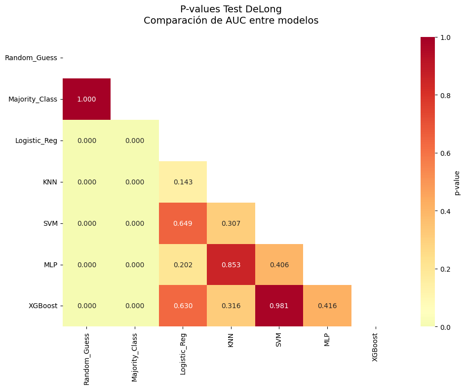
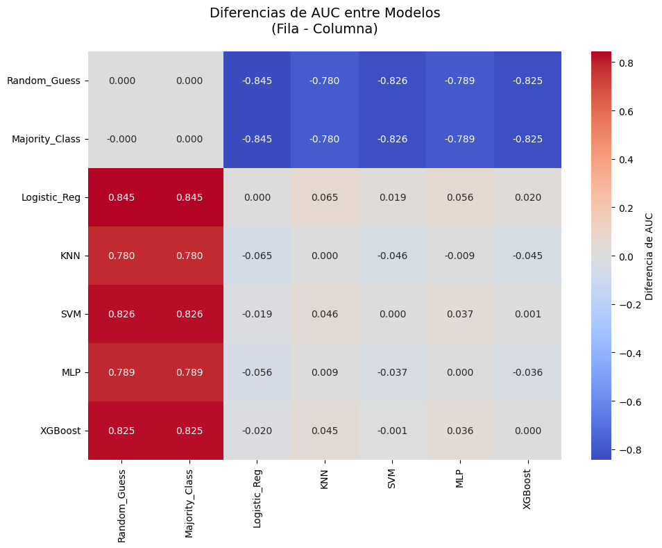
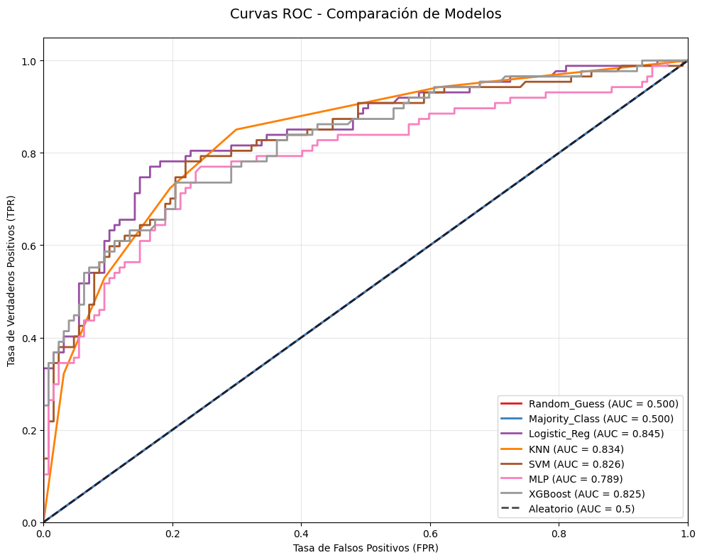
--------------------------------------------------------------------------------
TABLA COMPARATIVA FINAL - RESUMEN EJECUTIVO
--------------------------------------------------------------------------------
Accuracy Precision Recall F1-Score AUC AUC_CI Best_AUC
Modelo
Random_Guess 0.4953 0.4000 0.4828 0.4375 0.5000 [0.500, 0.500] False
Majority_Class 0.5935 0.0000 0.0000 0.0000 0.5000 [0.500, 0.500] False
Logistic_Reg 0.8084 0.7738 0.7471 0.7602 0.8448 [0.791, 0.895] True
KNN 0.7710 0.7159 0.7241 0.7200 0.8337 [0.773, 0.887] False
SVM 0.7664 0.7606 0.6207 0.6835 0.8262 [0.771, 0.881] False
MLP 0.7477 0.6897 0.6897 0.6897 0.7890 [0.718, 0.850] False
XGBoost 0.7570 0.7108 0.6782 0.6941 0.8253 [0.761, 0.879] False
--------------------------------------------------------------------------------
Total: 7 modelos | Métricas: 7
--------------------------------------------------------------------------------
================================================================================
RANKING DE MODELOS
================================================================================
--------------------------------------------------------------------------------
RANKING FINAL DE MODELOS
--------------------------------------------------------------------------------
AUC Accuracy F1-Score Overall_Rank
Logistic_Reg 0.8448 0.8084 0.7602 1.00
KNN 0.8337 0.7710 0.7200 2.00
XGBoost 0.8253 0.7570 0.6941 3.67
SVM 0.8262 0.7664 0.6835 3.67
MLP 0.7890 0.7477 0.6897 4.67
Majority_Class 0.5000 0.5935 0.0000 6.50
Random_Guess 0.5000 0.4953 0.4375 6.50
--------------------------------------------------------------------------------
Total: 7 modelos | Métricas: 4
--------------------------------------------------------------------------------
================================================================================
ANÁLISIS DE SIGNIFICANCIA ESTADÍSTICA
================================================================================
--------------------------------------------------------------------------------
COMPARACIONES ESTADÍSTICAMENTE SIGNIFICATIVAS
--------------------------------------------------------------------------------
Comparación Diferencia_AUC p_value Significancia
0 Random_Guess vs Logistic_Reg -0.8447 0.0000 ***
1 Random_Guess vs KNN -0.7801 0.0000 ***
2 Random_Guess vs SVM -0.8261 0.0000 ***
3 Random_Guess vs MLP -0.7889 0.0000 ***
4 Random_Guess vs XGBoost -0.8251 0.0000 ***
5 Majority_Class vs Logistic_Reg -0.8447 0.0000 ***
6 Majority_Class vs KNN -0.7801 0.0000 ***
7 Majority_Class vs SVM -0.8261 0.0000 ***
8 Majority_Class vs MLP -0.7889 0.0000 ***
9 Majority_Class vs XGBoost -0.8251 0.0000 ***
--------------------------------------------------------------------------------
Total: 10 modelos | Métricas: 4
--------------------------------------------------------------------------------
================================================================================
RESUMEN EJECUTIVO FINAL
================================================================================
MEJOR MODELO: Logistic_Reg
AUC: 0.8448
Accuracy: 0.8084
F1-Score: 0.7602
COMPARACIÓN CON MODELO BASE:
Mejora en AUC: +69.0%
Diferencia absoluta: 0.3448
TOTAL DE MODELOS EVALUADOS: 7
Modelos superiores a baseline: 5
Modelos con AUC > 0.8: 4
================================================================================
ANÁLISIS COMPLETADO EXITOSAMENTE
================================================================================
9.8.3. Ejemplo de aplicación: Regresión#
Cuando se comparan modelos de regresión, es fundamental no solo reportar métricas como RMSE, MAE o \(R^2\), sino también evaluar si las diferencias entre modelos son estadísticamente significativas. Para ello se utilizan pruebas como el Test Diebold-Mariano (DM) [Diebold and Mariano, 1995] y técnicas de bootstrap para intervalos de confianza [Efron, 1979].
1. Test Diebold-Mariano (1995) El test Diebold-Mariano (DM) evalúa si dos modelos de predicción difieren significativamente en su precisión predictiva.
Hipótesis
\[\begin{split} \begin{aligned} H_0 &: \mathbb{E}[L(e_{1,t}) - L(e_{2,t})] = 0 \quad \text{(no hay diferencia en el error esperado)} \\ H_1 &: \mathbb{E}[L(e_{1,t}) - L(e_{2,t})] \neq 0 \quad \text{(existe diferencia)} \end{aligned} \end{split}\]Donde
\(e_{i,t} = y_t - \hat{y}_{i,t}\) es el error de predicción del modelo \(i\) en el tiempo \(t\).
\(L(\cdot)\) es la función de pérdida, típicamente el error cuadrático \(L(e) = e^2\).
Para comparar dos modelos, se puede:
Calcular la diferencia de RMSE o MAE: \(\Delta = \text{Metric}_1 - \text{Metric}_2\)
Evaluar significancia mediante Diebold-Mariano (para errores correlacionados en el test set)
Ajustar por comparaciones múltiples (Bonferroni) cuando se comparan muchos modelos simultáneamente [Demšar, 2006]
2. Bootstrap para Intervalos de Confianza (Efron, 1979). El bootstrap permite estimar la incertidumbre de métricas de rendimiento como \(R^2\), RMSE o MAE sin suponer distribuciones paramétricas.
Procedimiento
Dada una muestra de test \((X, y)\), se generan \(B\) muestras con reemplazo: \((X^*_b, y^*_b)\) para \(b = 1,\dots,B\)
Para cada muestra se recalcula la métrica de interés \(M_b\) (por ejemplo, \(R^2_b\))
El intervalo de confianza al 95% se obtiene con los percentiles 2.5 y 97.5
Interpretación: si el IC no incluye 0, la métrica es estadísticamente diferente de un modelo aleatorio; IC estrecho indica alta precisión de la estimación.
3. Comparación de Métricas de Error Para comparar modelos de regresión se suelen utilizar
RMSE: raíz del error cuadrático medio
MAE: error absoluto medio
R²: coeficiente de determinación
Para comparar dos modelos, se puede
Calcular la diferencia de RMSE o MAE: \(\Delta = \text{Metric}_1 - \text{Metric}_2\)
Evaluar significancia mediante Diebold-Mariano (para errores correlacionados en el test set)
Ajustar por comparaciones múltiples (Bonferroni) cuando se comparan muchos modelos simultáneamente [Demšar, 2006].
4. Consideraciones prácticas
Siempre reportar \(p\)-values y magnitud de la diferencia.
Para múltiples comparaciones, aplicar correcciones tipo Bonferroni:
Un modelo con diferencia significativa y \(\Delta RMSE\) relevante se considera superior.
Las visualizaciones tipo heatmaps de \(p\)-values facilitan la interpretación de comparaciones múltiples.
import numpy as np
import pandas as pd
import matplotlib.pyplot as plt
import seaborn as sns
from scipy import stats
from sklearn.model_selection import train_test_split
from sklearn.compose import ColumnTransformer
from sklearn.preprocessing import OneHotEncoder, StandardScaler
from sklearn.pipeline import Pipeline
from sklearn.metrics import mean_squared_error, mean_absolute_error, r2_score, mean_absolute_percentage_error
from sklearn.linear_model import LinearRegression, Ridge, Lasso
from sklearn.ensemble import RandomForestRegressor, GradientBoostingRegressor
from sklearn.svm import SVR
from sklearn.neighbors import KNeighborsRegressor
from sklearn.neural_network import MLPRegressor
from sklearn.dummy import DummyRegressor
import xgboost as xgb
import warnings
warnings.filterwarnings('ignore')
# Configuración para mejores visualizaciones de pandas
pd.set_option('display.max_columns', None)
pd.set_option('display.width', None)
pd.set_option('display.max_colwidth', None)
print("=" * 80)
print("COMPARACIÓN ESTADÍSTICA DE MODELOS DE REGRESIÓN")
print("Basado en: Diebold & Mariano (1995), Demšar (2006), Chicco et al. (2021)")
print("=" * 80)
# 1. Dataset para regresión
print("\n1. PREPARACIÓN DE DATOS (Hastie et al., 2009)")
df = sns.load_dataset("tips")
features_num = ["size", "tip"]
features_cat = ["sex", "smoker", "day", "time"]
df = df.dropna(subset=features_num + features_cat + ["total_bill"])
for col in features_cat:
df[col] = df[col].astype(str)
X = df[features_num + features_cat]
y = df["total_bill"]
X_train, X_test, y_train, y_test = train_test_split(
X, y, test_size=0.3, random_state=42
)
print(f"Dataset: {X_train.shape[0]} entrenamiento, {X_test.shape[0]} test")
# 2. Preprocesamiento
preprocess = ColumnTransformer(
transformers=[
("num", StandardScaler(), features_num),
("cat", OneHotEncoder(drop="first", sparse_output=False), features_cat)
]
)
# 3. Modelos de regresión
print("\n2. CONFIGURACIÓN DE MODELOS (Demšar, 2006)")
models = {
"Mean_Baseline": DummyRegressor(strategy="mean"),
"Median_Baseline": DummyRegressor(strategy="median"),
"Linear_Reg": LinearRegression(),
"Ridge": Ridge(random_state=42, alpha=1.0),
"Lasso": Lasso(random_state=42, alpha=0.1),
"Random_Forest": RandomForestRegressor(random_state=42, n_estimators=100),
"Gradient_Boosting": GradientBoostingRegressor(random_state=42, n_estimators=100),
"SVR": SVR(C=1.0, kernel='rbf'),
"KNN": KNeighborsRegressor(n_neighbors=5),
"MLP": MLPRegressor(random_state=42, max_iter=1000, hidden_layer_sizes=(50, 25)),
"XGBoost": xgb.XGBRegressor(random_state=42, n_estimators=100)
}
# 4. Entrenamiento y predicciones
print("Entrenando modelos de regresión...")
preds = {}
models_trained = {}
for name, model in models.items():
pipe = Pipeline(steps=[("preprocess", preprocess), ("model", model)])
pipe.fit(X_train, y_train)
models_trained[name] = pipe
preds[name] = pipe.predict(X_test)
# 5. Cálculo de métricas
print("\n3. CÁLCULO DE MÉTRICAS (Chicco et al., 2021)")
results = {}
def calculate_mape(y_true, y_pred):
"""Calcula MAPE de forma robusta"""
mask = y_true != 0
return np.mean(np.abs((y_true[mask] - y_pred[mask]) / y_true[mask])) * 100
for name in models.keys():
y_pred = preds[name]
# Métricas principales
rmse = np.sqrt(mean_squared_error(y_test, y_pred))
mae = mean_absolute_error(y_test, y_pred)
mape = calculate_mape(y_test, y_pred)
r2 = r2_score(y_test, y_pred)
absolute_errors = np.abs(y_test - y_pred)
# Bootstrap para IC
n_bootstraps = 500
r2_scores = []
for _ in range(n_bootstraps):
indices = np.random.randint(0, len(y_test), len(y_test))
try:
r2_boot = r2_score(y_test.iloc[indices], y_pred[indices])
r2_scores.append(r2_boot)
except:
continue
r2_ci_lower = np.percentile(r2_scores, 2.5) if r2_scores else r2
r2_ci_upper = np.percentile(r2_scores, 97.5) if r2_scores else r2
results[name] = {
'RMSE': rmse,
'MAE': mae,
'MAPE': mape,
'R2': r2,
'R2_CI_Lower': r2_ci_lower,
'R2_CI_Upper': r2_ci_upper,
'Predictions': y_pred,
'Absolute_Errors': absolute_errors
}
# 6. TABLAS DE RESULTADOS MEJORADAS CON PANDAS
print("\n" + "="*80)
print("TABLAS DE RESULTADOS - ANÁLISIS COMPARATIVO")
print("="*80)
# Crear DataFrame principal con todas las métricas
results_df = pd.DataFrame(results).T
numeric_columns = ['RMSE', 'MAE', 'MAPE', 'R2', 'R2_CI_Lower', 'R2_CI_Upper']
for col in numeric_columns:
results_df[col] = pd.to_numeric(results_df[col], errors='coerce')
# Tabla 6.1: Métricas Principales con Formato Profesional
print("\nTABLA 1: MÉTRICAS DE REGRESIÓN POR MODELO")
print("-" * 80)
metrics_table = results_df[['RMSE', 'MAE', 'MAPE', 'R2']].copy()
# Formatear números para mejor presentación
styled_metrics = metrics_table.style \
.format({
'RMSE': '{:.3f}',
'MAE': '{:.3f}',
'MAPE': '{:.2f}%',
'R2': '{:.4f}'
}) \
.background_gradient(subset=['R2'], cmap='RdYlGn') \
.background_gradient(subset=['RMSE', 'MAE', 'MAPE'], cmap='RdYlGn_r') \
.set_caption('Tabla 1: Comparación de Métricas de Regresión (Chicco et al., 2021)') \
.set_properties(**{
'border': '1px solid black',
'text-align': 'center'
})
display(styled_metrics)
# Tabla 6.2: Intervalos de Confianza y Ranking
print("\nTABLA 2: INTERVALOS DE CONFIANZA Y RANKING")
print("-" * 80)
ranking_data = []
for name in models.keys():
ranking_data.append({
'Modelo': name,
'R²': results[name]['R2'],
'IC 95% R²': f"[{results[name]['R2_CI_Lower']:.3f}, {results[name]['R2_CI_Upper']:.3f}]",
'RMSE': results[name]['RMSE'],
'MAE': results[name]['MAE'],
'MAPE': f"{results[name]['MAPE']:.1f}%"
})
ranking_df = pd.DataFrame(ranking_data)
# Calcular rankings
ranking_df['Rank_R2'] = ranking_df['R²'].rank(ascending=False, method='dense')
ranking_df['Rank_RMSE'] = ranking_df['RMSE'].rank(ascending=True, method='dense')
ranking_df['Rank_Overall'] = (ranking_df['Rank_R2'] + ranking_df['Rank_RMSE']) / 2
ranking_df['Rank_Overall'] = ranking_df['Rank_Overall'].rank(method='dense')
# Ordenar por ranking general
ranking_df = ranking_df.sort_values('Rank_Overall')
styled_ranking = ranking_df.style \
.format({
'R²': '{:.4f}',
'RMSE': '{:.3f}',
'MAE': '{:.3f}'
}) \
.apply(lambda x: ['background: lightgreen' if x.name == ranking_df['Rank_Overall'].idxmin() else '' for i in x], axis=1) \
.set_caption('Tabla 2: Ranking de Modelos con Intervalos de Confianza (Efron, 1979)') \
.set_properties(**{
'border': '1px solid black',
'text-align': 'center'
})
display(styled_ranking)
# 7. Test Diebold-Mariano
print("\n4. TEST DIEBOLD-MARIANO (Diebold & Mariano, 1995)")
def diebold_mariano_test(y_true, pred1, pred2, h=1):
"""
Implementación del test Diebold-Mariano (1995)
"""
errors1 = y_true - pred1
errors2 = y_true - pred2
loss1 = errors1**2
loss2 = errors2**2
d = loss1 - loss2
n = len(d)
gamma_0 = np.var(d, ddof=1)
lags = min(int(np.sqrt(n)), 5)
gamma_sum = 0
for lag in range(1, lags + 1):
gamma_lag = np.corrcoef(d[:-lag], d[lag:])[0, 1] * gamma_0
gamma_sum += (1 - lag/(lags + 1)) * gamma_lag
var_dm = (gamma_0 + 2 * gamma_sum) / n
dm_stat = np.mean(d) / np.sqrt(var_dm) if var_dm > 0 else 0
p_value = 2 * (1 - stats.norm.cdf(abs(dm_stat)))
return dm_stat, p_value
# 8. Comparación estadística entre modelos
model_names = list(preds.keys())
pvals_dm = pd.DataFrame(
np.ones((len(model_names), len(model_names))),
index=model_names, columns=model_names
)
diffs_rmse = pd.DataFrame(
np.zeros((len(model_names), len(model_names))),
index=model_names, columns=model_names
)
print("Realizando comparaciones Diebold-Mariano...")
for i, m1 in enumerate(model_names):
for j, m2 in enumerate(model_names):
if i >= j:
continue
try:
diff_rmse = results[m1]['RMSE'] - results[m2]['RMSE']
dm_stat, p = diebold_mariano_test(y_test.values, preds[m1], preds[m2])
diffs_rmse.loc[m1, m2] = diff_rmse
diffs_rmse.loc[m2, m1] = -diff_rmse
pvals_dm.loc[m1, m2] = p
pvals_dm.loc[m2, m1] = p
except Exception as e:
continue
# Tabla 8.1: Matriz de Diferencias de RMSE
print("\nTABLA 3: MATRIZ DE DIFERENCIAS DE RMSE")
print("-" * 80)
styled_diffs = diffs_rmse.style \
.format('{:.3f}') \
.background_gradient(cmap='coolwarm_r', vmin=-2, vmax=2) \
.set_caption('Tabla 3: Diferencias de RMSE (Fila - Columna) - Valores negativos indican mejor modelo en fila') \
.set_properties(**{
'border': '1px solid black',
'text-align': 'center'
})
display(styled_diffs)
# Tabla 8.2: Matriz de p-values Diebold-Mariano
print("\nTABLA 4: MATRIZ DE P-VALUES DIEBOLD-MARIANO")
print("-" * 80)
def highlight_significant(val):
"""Resaltar valores significativos"""
if val < 0.001:
return 'background: #2ecc71; color: white; font-weight: bold'
elif val < 0.01:
return 'background: #27ae60; color: white; font-weight: bold'
elif val < 0.05:
return 'background: #f1c40f; color: black; font-weight: bold'
elif val < 0.1:
return 'background: #e67e22; color: white; font-weight: bold'
else:
return 'background: #e74c3c; color: white'
styled_pvals = pvals_dm.style \
.format('{:.4f}') \
.applymap(highlight_significant) \
.set_caption('Tabla 4: P-values Test Diebold-Mariano (1995) - Verde: p < 0.001, Amarillo: p < 0.05, Rojo: p ≥ 0.1') \
.set_properties(**{
'border': '1px solid black',
'text-align': 'center'
})
display(styled_pvals)
# 9. VISUALIZACIONES
print("\n" + "="*80)
print("VISUALIZACIONES Y ANÁLISIS GRÁFICO")
print("="*80)
# 9.1 Heatmap p-values Diebold-Mariano
plt.figure(figsize=(12, 8))
mask = np.triu(np.ones_like(pvals_dm, dtype=bool))
sns.heatmap(pvals_dm, annot=True, fmt=".4f", cmap="RdYlGn_r",
center=0.05, mask=mask, cbar_kws={'label': 'p-value'},
annot_kws={"size": 8})
plt.title('Test Diebold-Mariano (1995)\nComparación de Precisión Predictiva',
fontsize=14, pad=20)
plt.tight_layout()
plt.show()
# 10. TABLA FINAL RESUMEN
print("\n" + "="*80)
print("TABLA FINAL - RESUMEN EJECUTIVO")
print("="*80)
# Crear tabla resumen ejecutivo
best_r2_model = results_df['R2'].idxmax()
best_rmse_model = results_df['RMSE'].idxmin()
summary_data = []
for name in model_names:
summary_data.append({
'Modelo': name,
'R²': results[name]['R2'],
'IC 95% R²': f"[{results[name]['R2_CI_Lower']:.3f}, {results[name]['R2_CI_Upper']:.3f}]",
'RMSE': results[name]['RMSE'],
'MAE': results[name]['MAE'],
'Mejor R²': 'SI' if name == best_r2_model else '',
'Mejor RMSE': 'SI' if name == best_rmse_model else '',
'Recomendación': 'RECOMENDADO' if name in [best_r2_model, best_rmse_model] else ''
})
summary_df = pd.DataFrame(summary_data)
styled_summary = summary_df.style \
.format({
'R²': '{:.4f}',
'RMSE': '{:.3f}',
'MAE': '{:.3f}'
}) \
.apply(lambda x: ['background: #e8f5e8' if x['Recomendación'] == 'RECOMENDADO' else '' for i in x], axis=1) \
.set_caption('Tabla 5: Resumen Ejecutivo - Modelos Recomendados') \
.set_properties(**{
'border': '1px solid black',
'text-align': 'center'
})
display(styled_summary)
# 11. ANÁLISIS DE SIGNIFICANCIA
print("\n" + "="*80)
print("ANÁLISIS DE SIGNIFICANCIA ESTADÍSTICA")
print("Con corrección por comparaciones múltiples (Demšar, 2006)")
print("="*80)
# Aplicar corrección de Bonferroni
n_comparisons = len(model_names) * (len(model_names)-1) // 2
bonferroni_alpha = 0.05 / n_comparisons
significant_comparisons = []
bonferroni_significant = []
for i, m1 in enumerate(model_names):
for j, m2 in enumerate(model_names):
if i < j:
p_val = pvals_dm.loc[m1, m2]
diff_rmse = diffs_rmse.loc[m1, m2]
if p_val < 0.05:
significant_comparisons.append({
'Comparación': f"{m1} vs {m2}",
'p-value': p_val,
'Diff_RMSE': diff_rmse,
'Significancia': '***' if p_val < 0.001 else '**' if p_val < 0.01 else '*'
})
if p_val < bonferroni_alpha:
bonferroni_significant.append(f"{m1} vs {m2}: p = {p_val:.6f}")
# Tabla de comparaciones significativas
if significant_comparisons:
sig_df = pd.DataFrame(significant_comparisons)
print("\nCOMPARACIONES ESTADÍSTICAMENTE SIGNIFICATIVAS (p < 0.05)")
styled_sig = sig_df.style \
.format({
'p-value': '{:.6f}',
'Diff_RMSE': '{:.3f}'
}) \
.background_gradient(subset=['p-value'], cmap='RdYlGn_r') \
.set_caption('Comparaciones con diferencias significativas en precisión predictiva') \
.set_properties(**{
'border': '1px solid black',
'text-align': 'center'
})
display(styled_sig)
print(f"\nTotal de comparaciones: {n_comparisons}")
print(f"Nivel de significancia Bonferroni: α = {bonferroni_alpha:.6f}")
if bonferroni_significant:
print(f"\nCOMPARACIONES SIGNIFICATIVAS (Bonferroni corregido):")
for comp in bonferroni_significant:
print(f" {comp}")
# 12. EXPORTAR RESULTADOS
print("\n" + "="*80)
print("EXPORTACIÓN DE RESULTADOS")
print("="*80)
# Exportar todas las tablas
with pd.ExcelWriter('resultados_regresion_completo.xlsx') as writer:
metrics_table.to_excel(writer, sheet_name='Metricas_Principales')
ranking_df.to_excel(writer, sheet_name='Ranking_Modelos')
diffs_rmse.to_excel(writer, sheet_name='Diferencias_RMSE')
pvals_dm.to_excel(writer, sheet_name='Pvalues_Diebold_Mariano')
summary_df.to_excel(writer, sheet_name='Resumen_Ejecutivo')
if significant_comparisons:
sig_df.to_excel(writer, sheet_name='Comparaciones_Significativas')
print("Resultados exportados a 'resultados_regresion_completo.xlsx'")
# 13. CONCLUSIÓN
print("\n" + "="*80)
print("CONCLUSIÓN Y RECOMENDACIONES FINALES")
print("="*80)
print(f"MEJOR MODELO GENERAL: {best_r2_model}")
print(f" R²: {results[best_r2_model]['R2']:.4f}")
print(f" RMSE: {results[best_r2_model]['RMSE']:.3f}")
print(f" IC 95% R²: [{results[best_r2_model]['R2_CI_Lower']:.3f}, {results[best_r2_model]['R2_CI_Upper']:.3f}]")
print(f"\nMEJOR MODELO POR PRECISIÓN: {best_rmse_model}")
print(f" RMSE: {results[best_rmse_model]['RMSE']:.3f}")
print(f"\nRESUMEN ESTADÍSTICO:")
print(f" Total de modelos comparados: {len(models)}")
print(f" Comparaciones realizadas: {n_comparisons}")
print(f" Diferencias significativas (p < 0.05): {len(significant_comparisons)}")
print(f" Diferencias altamente significativas (p < 0.001): {len([x for x in significant_comparisons if x['p-value'] < 0.001])}")
print("\n" + "="*80)
print("ANÁLISIS COMPLETADO - TODAS LAS TABLAS EXPORTADAS")
print("="*80)
================================================================================
COMPARACIÓN ESTADÍSTICA DE MODELOS DE REGRESIÓN
Basado en: Diebold & Mariano (1995), Demšar (2006), Chicco et al. (2021)
================================================================================
1. PREPARACIÓN DE DATOS (Hastie et al., 2009)
Dataset: 170 entrenamiento, 74 test
2. CONFIGURACIÓN DE MODELOS (Demšar, 2006)
Entrenando modelos de regresión...
3. CÁLCULO DE MÉTRICAS (Chicco et al., 2021)
================================================================================
TABLAS DE RESULTADOS - ANÁLISIS COMPARATIVO
================================================================================
TABLA 1: MÉTRICAS DE REGRESIÓN POR MODELO
--------------------------------------------------------------------------------
| RMSE | MAE | MAPE | R2 | |
|---|---|---|---|---|
| Mean_Baseline | 8.525 | 6.558 | 50.56% | -0.0434 |
| Median_Baseline | 8.377 | 6.101 | 42.25% | -0.0075 |
| Linear_Reg | 5.558 | 4.164 | 29.55% | 0.5566 |
| Ridge | 5.533 | 4.134 | 29.32% | 0.5605 |
| Lasso | 5.471 | 4.060 | 28.67% | 0.5703 |
| Random_Forest | 6.703 | 4.908 | 32.84% | 0.3550 |
| Gradient_Boosting | 6.598 | 4.546 | 29.54% | 0.3750 |
| SVR | 6.375 | 4.460 | 31.56% | 0.4165 |
| KNN | 6.482 | 4.833 | 34.13% | 0.3968 |
| MLP | 5.962 | 4.480 | 31.75% | 0.4897 |
| XGBoost | 7.394 | 5.244 | 31.22% | 0.2151 |
TABLA 2: INTERVALOS DE CONFIANZA Y RANKING
--------------------------------------------------------------------------------
| Modelo | R² | IC 95% R² | RMSE | MAE | MAPE | Rank_R2 | Rank_RMSE | Rank_Overall | |
|---|---|---|---|---|---|---|---|---|---|
| 4 | Lasso | 0.5703 | [0.302, 0.717] | 5.471 | 4.060 | 28.7% | 1.000000 | 1.000000 | 1.000000 |
| 3 | Ridge | 0.5605 | [0.301, 0.707] | 5.533 | 4.134 | 29.3% | 2.000000 | 2.000000 | 2.000000 |
| 2 | Linear_Reg | 0.5566 | [0.261, 0.700] | 5.558 | 4.164 | 29.6% | 3.000000 | 3.000000 | 3.000000 |
| 9 | MLP | 0.4897 | [0.141, 0.656] | 5.962 | 4.480 | 31.8% | 4.000000 | 4.000000 | 4.000000 |
| 7 | SVR | 0.4165 | [0.294, 0.525] | 6.375 | 4.460 | 31.6% | 5.000000 | 5.000000 | 5.000000 |
| 8 | KNN | 0.3968 | [0.095, 0.533] | 6.482 | 4.833 | 34.1% | 6.000000 | 6.000000 | 6.000000 |
| 6 | Gradient_Boosting | 0.3750 | [0.113, 0.576] | 6.598 | 4.546 | 29.5% | 7.000000 | 7.000000 | 7.000000 |
| 5 | Random_Forest | 0.3550 | [0.073, 0.535] | 6.703 | 4.908 | 32.8% | 8.000000 | 8.000000 | 8.000000 |
| 10 | XGBoost | 0.2151 | [-0.243, 0.497] | 7.394 | 5.244 | 31.2% | 9.000000 | 9.000000 | 9.000000 |
| 1 | Median_Baseline | -0.0075 | [-0.083, -0.000] | 8.377 | 6.101 | 42.2% | 10.000000 | 10.000000 | 10.000000 |
| 0 | Mean_Baseline | -0.0434 | [-0.242, -0.000] | 8.525 | 6.558 | 50.6% | 11.000000 | 11.000000 | 11.000000 |
4. TEST DIEBOLD-MARIANO (Diebold & Mariano, 1995)
Realizando comparaciones Diebold-Mariano...
TABLA 3: MATRIZ DE DIFERENCIAS DE RMSE
--------------------------------------------------------------------------------
| Mean_Baseline | Median_Baseline | Linear_Reg | Ridge | Lasso | Random_Forest | Gradient_Boosting | SVR | KNN | MLP | XGBoost | |
|---|---|---|---|---|---|---|---|---|---|---|---|
| Mean_Baseline | 0.000 | 0.148 | 2.967 | 2.992 | 3.054 | 1.822 | 1.927 | 2.150 | 2.043 | 2.563 | 1.131 |
| Median_Baseline | -0.148 | 0.000 | 2.820 | 2.845 | 2.906 | 1.674 | 1.779 | 2.002 | 1.896 | 2.416 | 0.983 |
| Linear_Reg | -2.967 | -2.820 | 0.000 | 0.025 | 0.087 | -1.145 | -1.041 | -0.818 | -0.924 | -0.404 | -1.836 |
| Ridge | -2.992 | -2.845 | -0.025 | 0.000 | 0.062 | -1.170 | -1.065 | -0.842 | -0.949 | -0.429 | -1.861 |
| Lasso | -3.054 | -2.906 | -0.087 | -0.062 | 0.000 | -1.232 | -1.127 | -0.904 | -1.011 | -0.491 | -1.923 |
| Random_Forest | -1.822 | -1.674 | 1.145 | 1.170 | 1.232 | 0.000 | 0.105 | 0.328 | 0.221 | 0.741 | -0.691 |
| Gradient_Boosting | -1.927 | -1.779 | 1.041 | 1.065 | 1.127 | -0.105 | 0.000 | 0.223 | 0.116 | 0.636 | -0.796 |
| SVR | -2.150 | -2.002 | 0.818 | 0.842 | 0.904 | -0.328 | -0.223 | 0.000 | -0.107 | 0.413 | -1.019 |
| KNN | -2.043 | -1.896 | 0.924 | 0.949 | 1.011 | -0.221 | -0.116 | 0.107 | 0.000 | 0.520 | -0.912 |
| MLP | -2.563 | -2.416 | 0.404 | 0.429 | 0.491 | -0.741 | -0.636 | -0.413 | -0.520 | 0.000 | -1.432 |
| XGBoost | -1.131 | -0.983 | 1.836 | 1.861 | 1.923 | 0.691 | 0.796 | 1.019 | 0.912 | 1.432 | 0.000 |
TABLA 4: MATRIZ DE P-VALUES DIEBOLD-MARIANO
--------------------------------------------------------------------------------
| Mean_Baseline | Median_Baseline | Linear_Reg | Ridge | Lasso | Random_Forest | Gradient_Boosting | SVR | KNN | MLP | XGBoost | |
|---|---|---|---|---|---|---|---|---|---|---|---|
| Mean_Baseline | 1.0000 | 0.6204 | 0.0005 | 0.0004 | 0.0003 | 0.0092 | 0.0056 | 0.0000 | 0.0023 | 0.0022 | 0.2033 |
| Median_Baseline | 0.6204 | 1.0000 | 0.0060 | 0.0054 | 0.0043 | 0.0356 | 0.0221 | 0.0001 | 0.0239 | 0.0157 | 0.2949 |
| Linear_Reg | 0.0005 | 0.0060 | 1.0000 | 0.0776 | 0.1342 | 0.0157 | 0.0590 | 0.1856 | 0.0138 | 0.0002 | 0.0047 |
| Ridge | 0.0004 | 0.0054 | 0.0776 | 1.0000 | 0.1749 | 0.0136 | 0.0541 | 0.1691 | 0.0104 | 0.0001 | 0.0044 |
| Lasso | 0.0003 | 0.0043 | 0.1342 | 0.1749 | 1.0000 | 0.0100 | 0.0458 | 0.1338 | 0.0048 | 0.0003 | 0.0039 |
| Random_Forest | 0.0092 | 0.0356 | 0.0157 | 0.0136 | 0.0100 | 1.0000 | 0.6400 | 0.4774 | 0.6080 | 0.0949 | 0.0651 |
| Gradient_Boosting | 0.0056 | 0.0221 | 0.0590 | 0.0541 | 0.0458 | 0.6400 | 1.0000 | 0.6407 | 0.8216 | 0.2215 | 0.0767 |
| SVR | 0.0000 | 0.0001 | 0.1856 | 0.1691 | 0.1338 | 0.4774 | 0.6407 | 1.0000 | 0.8092 | 0.4964 | 0.1543 |
| KNN | 0.0023 | 0.0239 | 0.0138 | 0.0104 | 0.0048 | 0.6080 | 0.8216 | 0.8092 | 1.0000 | 0.2007 | 0.1249 |
| MLP | 0.0022 | 0.0157 | 0.0002 | 0.0001 | 0.0003 | 0.0949 | 0.2215 | 0.4964 | 0.2007 | 1.0000 | 0.0207 |
| XGBoost | 0.2033 | 0.2949 | 0.0047 | 0.0044 | 0.0039 | 0.0651 | 0.0767 | 0.1543 | 0.1249 | 0.0207 | 1.0000 |
================================================================================
VISUALIZACIONES Y ANÁLISIS GRÁFICO
================================================================================
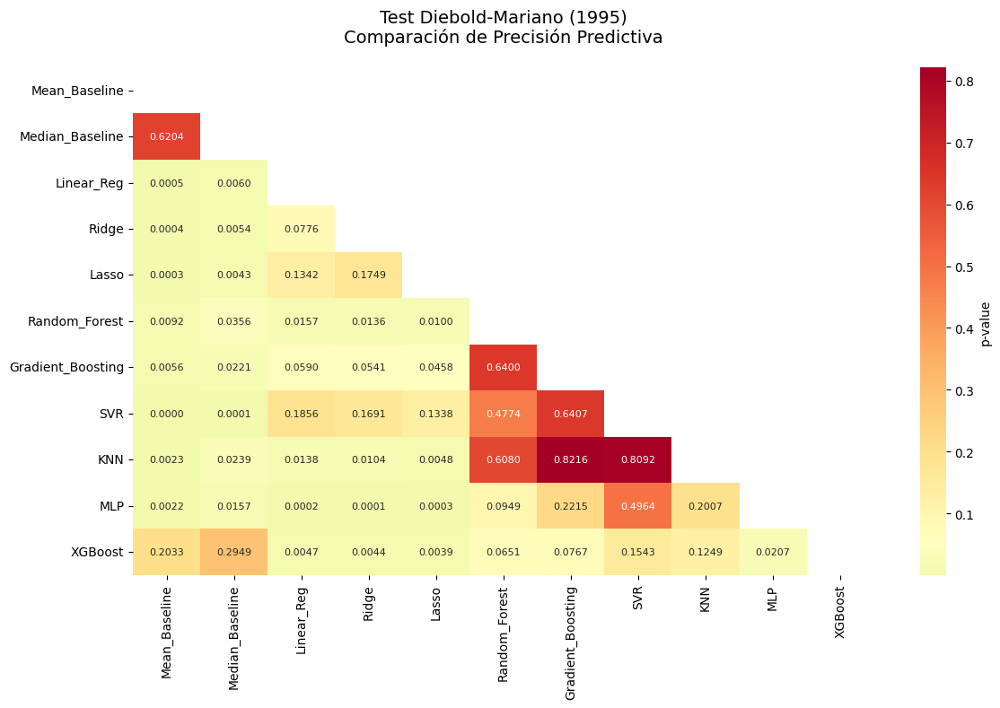
================================================================================
TABLA FINAL - RESUMEN EJECUTIVO
================================================================================
| Modelo | R² | IC 95% R² | RMSE | MAE | Mejor R² | Mejor RMSE | Recomendación | |
|---|---|---|---|---|---|---|---|---|
| 0 | Mean_Baseline | -0.0434 | [-0.242, -0.000] | 8.525 | 6.558 | |||
| 1 | Median_Baseline | -0.0075 | [-0.083, -0.000] | 8.377 | 6.101 | |||
| 2 | Linear_Reg | 0.5566 | [0.261, 0.700] | 5.558 | 4.164 | |||
| 3 | Ridge | 0.5605 | [0.301, 0.707] | 5.533 | 4.134 | |||
| 4 | Lasso | 0.5703 | [0.302, 0.717] | 5.471 | 4.060 | SI | SI | RECOMENDADO |
| 5 | Random_Forest | 0.3550 | [0.073, 0.535] | 6.703 | 4.908 | |||
| 6 | Gradient_Boosting | 0.3750 | [0.113, 0.576] | 6.598 | 4.546 | |||
| 7 | SVR | 0.4165 | [0.294, 0.525] | 6.375 | 4.460 | |||
| 8 | KNN | 0.3968 | [0.095, 0.533] | 6.482 | 4.833 | |||
| 9 | MLP | 0.4897 | [0.141, 0.656] | 5.962 | 4.480 | |||
| 10 | XGBoost | 0.2151 | [-0.243, 0.497] | 7.394 | 5.244 |
================================================================================
ANÁLISIS DE SIGNIFICANCIA ESTADÍSTICA
Con corrección por comparaciones múltiples (Demšar, 2006)
================================================================================
COMPARACIONES ESTADÍSTICAMENTE SIGNIFICATIVAS (p < 0.05)
| Comparación | p-value | Diff_RMSE | Significancia | |
|---|---|---|---|---|
| 0 | Mean_Baseline vs Linear_Reg | 0.000471 | 2.967 | *** |
| 1 | Mean_Baseline vs Ridge | 0.000400 | 2.992 | *** |
| 2 | Mean_Baseline vs Lasso | 0.000280 | 3.054 | *** |
| 3 | Mean_Baseline vs Random_Forest | 0.009184 | 1.822 | ** |
| 4 | Mean_Baseline vs Gradient_Boosting | 0.005617 | 1.927 | ** |
| 5 | Mean_Baseline vs SVR | 0.000000 | 2.150 | *** |
| 6 | Mean_Baseline vs KNN | 0.002251 | 2.043 | ** |
| 7 | Mean_Baseline vs MLP | 0.002224 | 2.563 | ** |
| 8 | Median_Baseline vs Linear_Reg | 0.006031 | 2.820 | ** |
| 9 | Median_Baseline vs Ridge | 0.005449 | 2.845 | ** |
| 10 | Median_Baseline vs Lasso | 0.004335 | 2.906 | ** |
| 11 | Median_Baseline vs Random_Forest | 0.035580 | 1.674 | * |
| 12 | Median_Baseline vs Gradient_Boosting | 0.022104 | 1.779 | * |
| 13 | Median_Baseline vs SVR | 0.000088 | 2.002 | *** |
| 14 | Median_Baseline vs KNN | 0.023888 | 1.896 | * |
| 15 | Median_Baseline vs MLP | 0.015734 | 2.416 | * |
| 16 | Linear_Reg vs Random_Forest | 0.015660 | -1.145 | * |
| 17 | Linear_Reg vs KNN | 0.013770 | -0.924 | * |
| 18 | Linear_Reg vs MLP | 0.000183 | -0.404 | *** |
| 19 | Linear_Reg vs XGBoost | 0.004716 | -1.836 | ** |
| 20 | Ridge vs Random_Forest | 0.013626 | -1.170 | * |
| 21 | Ridge vs KNN | 0.010415 | -0.949 | * |
| 22 | Ridge vs MLP | 0.000146 | -0.429 | *** |
| 23 | Ridge vs XGBoost | 0.004397 | -1.861 | ** |
| 24 | Lasso vs Random_Forest | 0.009986 | -1.232 | ** |
| 25 | Lasso vs Gradient_Boosting | 0.045809 | -1.127 | * |
| 26 | Lasso vs KNN | 0.004822 | -1.011 | ** |
| 27 | Lasso vs MLP | 0.000309 | -0.491 | *** |
| 28 | Lasso vs XGBoost | 0.003928 | -1.923 | ** |
| 29 | MLP vs XGBoost | 0.020675 | -1.432 | * |
Total de comparaciones: 55
Nivel de significancia Bonferroni: α = 0.000909
COMPARACIONES SIGNIFICATIVAS (Bonferroni corregido):
Mean_Baseline vs Linear_Reg: p = 0.000471
Mean_Baseline vs Ridge: p = 0.000400
Mean_Baseline vs Lasso: p = 0.000280
Mean_Baseline vs SVR: p = 0.000000
Median_Baseline vs SVR: p = 0.000088
Linear_Reg vs MLP: p = 0.000183
Ridge vs MLP: p = 0.000146
Lasso vs MLP: p = 0.000309
================================================================================
EXPORTACIÓN DE RESULTADOS
================================================================================
Resultados exportados a 'resultados_regresion_completo.xlsx'
================================================================================
CONCLUSIÓN Y RECOMENDACIONES FINALES
================================================================================
MEJOR MODELO GENERAL: Lasso
R²: 0.5703
RMSE: 5.471
IC 95% R²: [0.302, 0.717]
MEJOR MODELO POR PRECISIÓN: Lasso
RMSE: 5.471
RESUMEN ESTADÍSTICO:
Total de modelos comparados: 11
Comparaciones realizadas: 55
Diferencias significativas (p < 0.05): 30
Diferencias altamente significativas (p < 0.001): 8
================================================================================
ANÁLISIS COMPLETADO - TODAS LAS TABLAS EXPORTADAS
================================================================================
9.9. Proyecto Integrador de Aprendizaje Automático#
9.9.1. Objetivo#
Construir un modelo de clasificación supervisada para predecir si un préstamo emitido por la plataforma Lending Club resultará en default (1) o será pagado completamente (0). El objetivo es comparar el desempeño de los modelos construidos con scikit-learn y PySpark, además de aplicar LIME para interpretar predicciones.
9.9.2. Dataset#
Nombre: Lending Club Loan Data (2007–2020)
Fuente: Kaggle Dataset - Lending Club
Tamaño: más de 1,3 millones de registros
Características: variables socioeconómicas, financieras, de crédito, empleo y propósito del préstamo
9.9.3. Target#
Variable binaria:
loan_status0 = Fully Paid
1 = Charged Off (default)
Generar la variable
defaultbasada en la columnaloan_status:
df["default"] = df["loan_status"].apply(lambda x: 1 if x == "Charged Off" else 0)
9.9.4. Estructura del proyecto#
9.9.4.1. Exploración de datos (EDA)#
Cargar el dataset CSV
Ver distribución de la variable
defaultVerificar valores faltantes y tipos de datos
Visualizaciones:
Histogramas de variables numéricas
Boxplots por clase
Correlaciones
9.9.4.2. Preprocesamiento#
9.9.4.2.1. scikit-learn#
Seleccionar variables relevantes:
loan_amnt,int_rate,fico_range_high,emp_length,annual_inc,purpose,home_ownership,dti,addr_state, etc.Codificación de variables categóricas (
OneHotEncoderoLabelEncoder)Escalado con
StandardScalersi es necesarioDivisión
train_test_split(80/20), estratificada por clase
9.9.4.2.2. PySpark#
Leer CSV en
SparkSessionStringIndexeryOneHotEncoderpara categóricasVectorAssembler+StandardScaler(opcional)División
randomSplit, estratificada si es posible
9.9.4.3. Modelado con scikit-learn#
Usar
RandomForestClassifierAplicar
GridSearchCVsinPipeline, sobre:n_estimators: [10, 50, 100]max_depth: [5, 10, 15]
Métricas:
Accuracy, Precision, Recall, F1-score, ROC AUC
Matriz de confusión
Medir tiempo de entrenamiento y predicción con
time.time()o%time
9.9.4.4. Modelado con PySpark#
Usar
pyspark.ml.classification.RandomForestClassifierProbar manualmente las mismas combinaciones de hiperparámetros
Evaluar con
BinaryClassificationEvaluatorCalcular precisión, F1-score, matriz de confusión (manual si es necesario)
Medir tiempo total de entrenamiento y predicción
9.9.4.5. Interpretabilidad con LIME#
Instalar LIME:
pip install limeSeleccionar una o dos instancias clasificadas erróneamente
Aplicar
lime.lime_tabular.LimeTabularExplainerVisualizar:
Variables más influyentes en la predicción
Gráficos locales de explicación
9.9.4.6. Comparación de Resultados#
Tabla comparativa con:
Métricas para sklearn vs PySpark
Tiempo de cómputo
Gráficos:
Curva ROC
Comparación de tiempos
9.9.5. Entregable#
Un Jupyter Book bien documentado con:
Análisis exploratorio
Preprocesamiento (sklearn y PySpark)
Modelado + tuning de hiperparámetros
Evaluación de métricas
Interpretabilidad con LIME
Reflexión crítica sobre:
¿Qué entorno fue más rápido?
¿Cuál fue más preciso?
¿Cuándo es útil PySpark?
¿Qué aporta LIME?